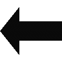
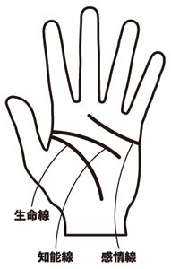

| 毎日使える！ ほめ言葉 女性を喜ばせる作法 | |
| アダム徳永 | |
| PHP研究所 (2008) | |
毎日使える！ ほめ言葉
──女性を喜ばせる作法
アダム徳永
まえがき
異性の立場から女性をほめることができるというのは、男性だけに与えられた権利であり、最大のぜいたくです。しかもすべて無料、経費ゼロ。
人を自由自在にほめられるようになると、ほめることが本当に楽しくなってきます。ほめたときに見せてくれる、くすぐったいような笑顔、ほっとした笑顔、周りをパッと明るくしてくれる笑顔。とくに女性をほめたときに見せてくれる笑顔のなんと美しいことでしょう。目の前で一輪の花がふわりと咲いたかのような美しさに、自然とこちらも心が温まります。今度はどんなところをほめてあげようか、どんな言葉でほめてあげようか。そう考えられる毎日が単調な日常生活に限りない喜びと潤いをもたらしてくれるのです。
では、人を上手にほめるためにはなにが必要でしょうか。大きく分けると「ほめ言葉」と「ほめる技術」の２つとなります。ほめ言葉とは野球に例えるならばボールです。ストレートだけではなく、カーブ、フォークなどの球種を知ることは、バリエーション豊かな投球のためには不可欠でしょう。しかし、肝心の「投げる技術」を身につけなければ試合はできません。ほめ言葉のキャッチボールを楽しむことはできないのです。本書では、ボキャブラリーはもちろん、それと同等、あるいはそれ以上に「どうすれば、いいほめ言葉を実践できるのか」というノウハウに重点を置いて作られています。その代表的なメソッドが「アダム式２段階ぼめ」です。このメソッドが私のもとへカウンセリングを受けに来られる方々、そして多くのメディアから「目からウロコが落ちた」との称賛をいただく最大の理由は、「いつでもどこでも、相手の本質的な長所をほめることができる」という手軽さと、その柔軟性にあります。相手に合ったほめ言葉をリストアップしておいて、ちょうどよいタイミングを待つ、なんて必要はもうありません。ほめたいときにほめたいだけ、ほめたい言葉でほめられる。まさに「ほめ言葉のビュッフェ」とも言える万能テクニックなのです。
人間は一人一人に尊厳があり貴重な存在です。その素晴らしさを互いに認め合い、その気持ちを言葉に変えて尊重し合う行為が「人をほめる」ということです。職場であれ、家庭であれ、いつだってそれが原点であることには変わりません。ですから、私はあえて申し上げます。「人をほめることに対しての見返りは、一切期待しないでください」と。
その代わり、あなたは幸せになれるでしょう。仕事運、結婚運、金運、人間関係のすべてに前向きな人生が送れるようになります。確かな技術に支えられた「人をほめる習慣」は、大げさではなく、あなたの人生をドラマティックに好転させるだけのパワーがあるのです。
本書は女性をほめることを目的に作られてますので、男女の「ほめられメカニズム」の違いや、女性が喜ぶボキャブラリーにも重点を置きました。会社の部下や上司、女友だち、奥様はもちろん、パーティで初めて会った女性からお店のウェイトレスまで、どんな女性に対しても実践できるようになっています。また、サービス業など女性のお客様と接することの多い方にも接客技術のひとつとしてご利用いただける内容となっています。
ぜひ本書を最大限に活用して、あなたの周りの女性たちとともに、幸せな毎日を手に入れてください。きっとあなたなら、できるはずです。
毎日使える！ ほめ言葉 目次
「大きな瞳がかわいいなあ」ってほめ言葉？
ほめ言葉ＢＥＳＴパターン13
「（Ａ）が君のことを（Ｂ）だってほめてたよ。僕も君は（Ｃ）だと思う」
女性の上司は不安でいっぱい？
「12色ぼめ」で笑顔を引き出す
「君って一見（Ａ）タイプだけど、意外と（Ｂ）な面もあるよね」
「○○ちゃんスマイル」で不動の地位を！
「目からウロコ」のほめ言葉
成否を分ける、プラス20％の演出力
これからは、性格美人に囲まれて生きていこう
男性にはすべての女性をほめる権利があります。
もしあなたが、私がこれから提唱する「ほめる技術」を習慣的に身につけたならば、即物的な見返りなどとはまったく次元の違う、一生ものの財産を手に入れることができるでしょう。それは周りの女性のいいところ、すなわち女性の長所に囲まれて生きていけるという幸福です。見た目の美しさや好みのタイプは自分の年齢や時代によって変化しますが、性格美人が賛美される美徳はいつの時代も変わりません。それではいま、あなたを取り巻く女性たちの中で、性格美人と呼べる女性はどのくらいいるでしょうか。７割くらい？ 半分以下？ ３割？ 一人もいないですって？ もし現状がそうであるからといって、あまり悲観する必要はありません。なぜなら、世の中に性格美人になる素質を持っていない女性なんて一人もいないのですから。案外、あなたが知らないだけで、毎日会社で会うあの女性が男性にとっては最高の性格美人だったりするのかもしれませんよ。いまはまだ、あなたにその長所を見せていないだけで。それどころか、あなたの周りのほとんどの女性が実は素晴らしい性格美人なのかもしれないのです。いまはまだ、あなたの前ではその良さを見せていないだけで......。
ところで、あなたは周りの女性たちからよく思われたいと望んでいますか。恋人や妻から、自分の娘から、女性の友人や同級生から、会社の同僚や部下から、はたまた馴染みのレストランのウェイトレスや接待で利用するクラブのママまで。男性であれば自分に関係するすべての女性から好感を持たれたいと思って当然です。信頼に足る素敵な男性と思われたい。そこは若者であろうがシニアであろうが譲れない、男性として健全な欲求でありましょう。私などもいつの間にか洋食より和食を好む年齢となりましたが、いつでもどこでも「いい男でいたい」という気持ちは変わりません。もちろん、女性に対してだけではなく、すべての人からそう思われることを望んでいます。セラピストという職業柄、私のことをときに人徳者と評価してくださる方もいらっしゃいますが、もし私にいくばくかの人徳が備わっているとしたら、それはすべて「一人一人の人間によく思ってもらいたい」という誰もが持っている欲求を発露としているはずです。それでは、あなたは女性たちからよく思われるために日ごろどんな努力をしていますか。妻の誕生日にプレゼントを買ったり、女性の部下を誘って食事をごちそうしてあげたり、大事な接待のときに味方になってくれるよう、クラブの女のコを同伴に連れて行ってあげたり。それもこれも立派な努力であると思いますし、そうしてもらった女性はあなたから喜びのパワーをちゃんと与えられていると思います。しかし、もしあなたが「女性をほめる」というもっとも簡単にして、もっとも喜ばれる習慣を身につけていないとするならば、これほどもったいないことはありません。男性の立場から女性をほめるということほど、楽しくてぜいたくな遊びはないからです。しかも、どんなにほめてもお金は一銭もかかりません。すべて無料、経費ゼロ。こんな素晴らしい特権をあなたはすでに持っているのです。
さて、冒頭の性格美人の話ですが、「あなたにはまだ見せていないだけで、実はあなたの周りは美人だらけである」とはいったいどういうことなのでしょうか。
ほめ言葉があなただけの美女を作る
以前、セラピストである私のところへカウンセリングを受けに来た女性からたいへん興味深い話を聞いたことがあります。彼女は男性相手の風俗店で働いている風俗嬢だったのですが、客を選べる立場ではないため、ときには非常に乱暴な客に当たってしまうこともあるそうです。客に言われるまでもなく自分がそれほど立派な人間だとは思っていない。でも、会ったばかりの男性にどうしてそこまで言われなければいけないのか。そんな言葉の暴力や乱暴な行為に何度もあい、ずいぶん嫌な思いをしてきたそうです。ところが、あることをきっかけにそんな悪質な客が激減したといいます。それは、乱暴そうな客、ちょっと怖そうな客が来たら、まず最初に「よかった。やさしそうな人で」と笑顔で言うこと。たったそれだけで、ほとんどの客がやさしくなったのだそうです。つまり彼女はほめ言葉と笑顔ひとつで、怖い客をやさしい客に変えてしまったのです。職業柄、ちょっと特別なケースではありますが、私はその話を聞いて、確かにほめ言葉にはそのくらいの力があってもおかしくはないと、妙に納得した気持ちで聞いていたのを覚えています。
例えばこんな経験はありませんか。あなたが同僚に「あの会社の女性担当者って、愛想ないな。いつもツンツンしているか疲れた顔をしているかのどっちかだよな」と不満を言ったところ、その同僚は「なに言ってる。いつも笑顔で愛想もいいし、この間なんかいろいろと助けてもらったぞ」と、同じ人物に対してまったく逆の印象を持っていたなんてことが。その女性が同僚に特別な好意を持っているわけでもなさそうだ。それなのにこの差はなんなのだろうかと。逆の経験を持った方もいるでしょう。共通の知り合いに、ある女性のことをやさしい人だと言ったら、その人は反対にきつい性格の女性だという印象を持っていたとか。そこまで極端ではないにしても、同じ人物の話をしているのに自分の持っている印象とは違った見方をしているのに気づいたことはあるのではないでしょうか。
人間の性格は多面体です。いいところもあれば悪いところもある。愛想がないと言われるような人だって、場所や相手によっては愛想のいいときが必ずあるもの。そのとき、その人は「愛想がいい女性」ということになります。つまり、愛想の悪い人でも愛想がいいという長所を持っているし、不誠実な人でも誠実という長所を持っているのです。ただ、それが表に出るか、心の底に仕舞っているか、あなたに対して見せるか見せないかの差でしかありません。冒頭の風俗嬢の例ではありませんが、暴力的と思われる人だって、心のどこかにはやさしいという長所を持っている。どんなに小さくたって長所は長所です。その長所を「あなたってやさしい人ね」という言葉で認めてくれたからこそ、相手の期待を裏切りたくないという前向きな心理が働いて、自分のやさしさを心の底から引っ張り出してきて、見えるように表に出したということでしょう。
数々の映画で主演男優賞を獲得され、「理想的な上司」としても人気の高い俳優、哀川翔さんが以前、こうおっしゃるのを耳にしたことがあります。「自分を信頼した者がそこにいるとしたら、不幸にさせたくないよね」。自分に厳しく他人にやさしいと評される哀川さんならではの素晴らしい人生訓ですが、多かれ少なかれ、誰でもそのような気概は持っているのではないでしょうか。「君は信頼できるよ」と言ってくれる上司には、その信頼を失いたくない。自分をやさしいと思ってくれる男性からは、やさしい人だと思われていたい。かっこいいと言ってくれる女性の前では、かっこいい自分でありたい。
ほめるとは、相手の人間性を賛美する行為です。誰もが持っている人間としての長所を「素晴らしい」と評価してあげる行為です。ほめ言葉によって、相手はそのほめられた部分をより一層、あなたに見せてくれるようになる。少なくともあなたの前では自分の人間としての長所を表に出してくれるようになるのです。これを自分の周りのすべての人に対して行なったとしたら、あなたはどうなると思いますか。これからの人生、周りの人のいい面ばかりを見て生きていくことができるということなのです。実際、人をほめる習慣を実践するまでの私は、人間に対してかなり悲観的な考えを持っていました。はっきり申し上げれば、嫌いな人もたくさんいました。しかし、すべての人の本質的な長所をほめるように気をつける生活を送るうちに、あるときふと実感したのです。「自分の周りにはいい人ばかりいてくれて、本当に幸せだなあ」と。あなたもそんな人生を送りたいとは思いませんか。幸せは雲上にあるものではなく、日常の生活の中にあります。普段の人間関係の中にあるのです。これからご紹介する人間の本質的な長所を賛美するほめ言葉を実践していけば、あなたの周りにはいい人が増え、あなたを取り巻く人間関係がとても潤いのあるものとなることでしょう。
これからの人生、いまにも嵐をよびそうな重たい雨雲をしょって、石ころだらけの寂しい荒野を歩いて行くのか、あるいは青く晴れ渡った空に小鳥のさえずりを聞きながら、色とりどりの花が咲く美しい花畑の中を歩いて行くのか。あなたなら、そのどちらを選びますか。
人をほめる習慣を持つと、人生に愛されるようになります。
動物がほめ合わないのはなぜか？
人間の本能的な欲求は大きく分けて２つあります。愛に対する欲求と自己実現への欲求です。生まれたばかりの赤ん坊でも母の愛がほしくて泣き、抱いてもらえばその欲求が満たされて泣きやむ。人間は生まれながらにして、愛に対する欲求を持っているのです。異性の存在に目覚めてからは、それこそ異性と愛し愛されたいがために、男女を問わずさまざまな努力をするわけですが、なにも恋愛対象となる異性からだけではなく、一個の人間として愛を与えられることにも大きな喜びを感じるものです。もし誰からも異性として認めてもらえない、誰からも人間として尊重されない方がいたなら、その人の魂は生きる希望を見失ってしまうかもしれません。人間は一人では生きていけないとはよくいいますが、それは人間として認められて、愛情を交換することができなければ生きていけないということです。一方で、自己実現への欲求とは、自分の能力を活かすことによって、いかに世の中に影響を与えられるか、世の中のためになるのか、そのことによって自分という存在を価値のあるものにしたいという欲求のことです。どんなに才能のあるプロ野球選手でも、見ている人の一人もいないスタジアムでホームランを打ったところで、その欲求は満たされません。満員の観衆が見ている前でホームランを飛ばし、大歓声を浴びながらダイヤモンドを回るから喜びになる。翌日のスポーツ紙を読んで、勇気づけられる人がいるから喜びになる。まったく誰も関心を持ってくれなかったとしたら、ホームランなんてその人にとってはなんの価値もなくなってしまうでしょう。この２つの本能的な欲求、愛に対する欲求と自己実現への欲求を持つ人間の魂にグイッとエネルギーを注入してあげる行為が、人をほめてあげるということなのです。
ところで、犬が他の犬に向かって「いい毛並みしてるねえ。君がちゃんと行儀よくしているから飼い主も手入れしてくれるんだね」なんてほめたりはしませんよね。他者をほめる文明を持っているのは人類だけです。これは他者に自己を認められないと生きていけない人間の弱さでもありますが、ほめ合うことにより自信がついて、次のステップへと自分を向上させる意力を作り出すことができるという、人間だけに与えられた知恵でもあります。いったいいつから人類が他者をほめることを覚えたのか、それに関する資料を見つけることはできませんでしたが、案外、狩猟採集に頼っていた時代から「こんなに獲物をしとめてくるなんて、お父ちゃんスゴイ！」なんていうほめ言葉がきっかけで、もっとほめられたいがために、新しい狩りの道具を生み出したりしたのかもしれませんね。
日本男児ほどほめる素質のある民族はいない
日本は敗戦から多くを学び、人類史上まれに見る高度経済成長を経て、いまなお先進国として、そして平和国家として世界に君臨し続けています。日本人には欧米のよい部分を素直に取り入れて吸収し、それを温存しながら咀嚼して、新たな文化を作り出す力があるのです。自動車や携帯電話などの工業製品はもとより、服飾文化から社会的なモラル、男女平等の精神に至るまで、その勤勉さと柔軟性を私は一人の日本人として、心から誇りに思っています。男女のありかたについて言えば、愛を交わすための技術もかなり進化をとげました。セラピストである私の実感でも男性と女性の性差を認めつつ、そこからよりよい関係を築くためのノウハウはかなり高いレベルで構築されつつあります。ただひとつ残念なことは、ほめる技術という点では、日本はまだ恋愛などの進歩に比べて、半世紀くらい遅れているという印象がぬぐえません。人間は一人一人尊厳があり貴重な存在です。その尊厳性を互いに言葉で表現して認め合う、その技術が遅れているように思われます。欧米男性の習慣をそのまま真似る必要もありませんが、その表現力の豊かさは吸収するに値するでしょう。もしこれからの日本男児がその部分を素直に取り入れて、咀嚼して、自分たちの習慣にできたならば、もともと持っている精神性の高さ、繊細さ、言語能力の高さと相まって、これはもう世界最強なのではないかと、日本の将来に思いを巡らせては一人、ほくそえんだりしているのです。
「わかっていてもほめられない」あなたへ
ほめた本人にとっても、ほめられた相手にとってもいいこと尽くしの「ほめる習慣」なわけですが、その良さを知ったからといって、すぐに無意識にできるようになるほど簡単なものでもありません。最近は部下への教育やサービス業に携わる人へのコーチング、スポーツ選手の育成、子育てなどでもほめる力を取り入れだしていることもあり、なんとなくでも「人をほめることって大切なんだろうな」という認識を持っている人が多く、それは非常に喜ばしいことなのですが、残念ながらその認識が実践にまで結びついていないのが現状です。セラピストである私のもとを訪れた方々とのカウンセリングでは、例えば夫婦の問題で来られる方などに、その解決方法のひとつとして「相手の人間性をほめる」ことをアドバイスすることもあるのですが、「わかっていてもなかなかできない」という方が多くいらっしゃいます。理由としては「なにをほめてよいかわからない」「ほめるきっかけが見つからない」「恥ずかしくて言えない」「相手が喜ぶのかどうか不安」などが挙げられます。そこで私も彼らの一助となりうるようなものはないかと、ほめることに関するさまざまな書籍に目を通してみました。それで気がついたことは、素敵なほめ言葉がたくさん載っている本やほめることの効果を讃える本は多いが、どうすればほめることができるのかという「ほめる技術」にまで言及しているものはほとんどないという事実です。ほめる習慣を持つというのは、相手がなにかほめられるようなことをしたときにだけほめるということではありません。日常的に人をほめてこその習慣です。そこにいるだけでその人の人間性までをもほめられるようでなければなりません。例えば、もしあなたが「君は責任感があるね」というほめ言葉を暗記したところで、それを言うタイミングをただ待ってるだけでは、いつまでたっても、そのほめ言葉の出番はないかもしれません。メロスがセリヌンティウスの待つゴールへとたどり着くような、そんな絵に描いたような「責任感のある場面」は日常生活においてそうそうあるものではないからです。つまり、ほめ言葉のボキャブラリーを増やすことと同じくらい、もしくはそれ以上に「ほめる技術」を身につけることが大切なのです。「ほめる技術」とは「ほめたいときに、ほめたいだけほめられる技術」のこと。本書はそのことに留意して、ほめ言葉の数よりもその実践的な技術やパターンを伝えるために多くの紙面を割いています。10年以上、日々実践してきた私の実感だけではなく、私のカウンセリングを受けられた１０００人を超す方々の実践結果に後押しされてあえて申し上げますが、私がお伝えする「ほめる技術」であれば、「ほめ言葉は知っているけど、ほめるタイミングがない」なんてことはもう言わせません。ぜひ、この素晴らしい習慣を身につけて、これからのあなたの人生に役立ててください。
女性の「ほめられメカニズム」を知ろう
この本は男性がすべての女性をほめるためのテクニックの習得を目的としています。女性をほめる技術に重点を置いたのは、男性同士であればそれなりにほめることもできるという人でも、女性をほめるというのはいろいろと気を遣う部分が多くて、正直苦手であるという場合が多いからです。その気持ちは私にもよくわかります。同じ男性に対しては、こういう言葉がうれしいだろうなとか、ここまで言っても大丈夫だろうという、感覚的になんとなく安心できる部分があります。それが女性相手となると同じようにはいかない。それもそのはず、恋愛やセックスにおいて男女の性差が存在するように、ほめることにも、男と女では精神構造が少し違うからなのです。すべての女性にそのまま当てはまるわけではありませんが、男性からすると見落としがちなその傾向をちょっと考察してみましょう。
女性は外見へのほめ言葉が内面性の入り口まで届く
「そのシャツ、かっこいいね」「その帽子、センスいいじゃん」と男性がほめられても、それなりにうれしいでしょうが、そこはファッションに限っての話。むしろ、そんな表面的な部分だけじゃなくて、もっと自分の内面を知ってくれと思ったりするものです。さまざまなことに対してそうですが、男性は喜びの欲求をそのセクションごとにきっちりと分ける傾向があります。仕事は仕事、プライベートはプライベート、外見は外見、中身は中身。簡単に言えば、女性はそのセクションの区別が男性ほどきっちりしていません。理論性を重んじる男性に対して、より感覚的な親和性を重んじるのが女性と言ってもいいでしょう。
ある出版社に勤める友人から聞いたのですが、雑誌のページを作っていく過程で、男性誌の場合はページをめくるごとに扱うジャンルを変えていったり、技術の難易度を上げていったりという「展開の妙」にもっとも気を遣うのに対して、女性誌の場合は展開よりもむしろ、どうすれば読者の好きなものがいっぱい載っているように見られるか、どうすれば開いた瞬間、その読者が自分の感性に合っていると思ってくれるか、そこに一番気を配るのだそうです。同じページにさまざまなジャンルのアイテムが載っていたり、脈絡を無視した展開だったりすると、男性は一般的に違和感を覚えるものですが、女性は比較的自然に受け入れてくれるのだそう。一度、女性向けのファッション誌を立ち読みしてみてください。「どこから読めばいいのだ？」ととまどうほど、さまざまなセクションを軽々と飛び越えた女性たちの自由な感性がひしめいていることでしょう。
また、こんなことはないでしょうか。女性と口論になってしまったときに、終始論理的に説得しようとするあなたに対して、相手の女性が争点と無関係なことまでポンポンと引き合いに出してくるものだから、つい「いま、そんな話をしているんじゃないだろ！」と怒鳴ってしまったなんてこと。私は何度もあります。これも話のジャンルを軽々と飛び越えて感覚のおもむくままに脳内でコネクトしていける女性ならではの特徴でしょう。男性からすれば一見無関係な話でも、女性からすれば（どう関連しているのかやはりわからないことも多いのですが）ちゃんと繋がっている話なのです。さて、ほめられるという点においてはどうでしょうか。男性の場合は、見た目をほめられることと、内面性の長所をほめられることとは別の話であると思うでしょうが、女性にとっては外見も内面性の一部であるのだと考えてよいでしょう。「そのスカートかわいいね」とほめられれば、それは「かわいいスカートをほめられた」だけで止まることなく、「かわいいスカートを選んだセンスをほめられた私」であったり「スカートをかわいくはけている自分の魅力をほめられた私」というその女性のキャラクター、つまり内面性にまでことは及びます。このことは、ファッションに関してのみならず、しぐさや姿勢、顔や手、声といった表面的なものごとすべてに当てはまります。説明がややこしくなってしまいましたが、つまり、女性とは見た目と内面性が非常に密接に関連しているということです。だからこそ、男性以上に見た目をほめてもらいたい。女性にとって外見をほめられることは、内面性の入り口をほめられたということです。そんな女性ならではの特性を活かして、ハートに直接響くようなほめ言葉を、相手の女性が思いもよらないようなタイミングで投下してしまおうというのが、私が長年の習慣から体系化させた、「アダム式２段階ぼめ」というメソッドです。
〈表面ぼめ〉と〈本質ぼめ〉を意識しよう
ではさっそく、女性をほめるための実弾ともいえる「ほめ言葉」について勉強してみましょう。誰でもよいのですが、あなたの好きな女性を思い浮かべて、思いつくほめ言葉をちょっと書き出してみてください。順不同でかまいません。私もやってみますね。
思いついたほめ言葉
声がかわいい、赤い服が似合う、性格に裏表がない、責任感がある、きれいな長い髪、瞳が大きい、ユーモアがある、決断力がある、姿勢がいい、気配り上手だ
とりあえずこんなところでしょうか。私はこれらを大きく２つに分類して考えています。「表面的なほめ言葉」と「本質的なほめ言葉」です。前例を分類するとこうなります。
表面的なほめ言葉
声がかわいい、赤い服が似合う、きれいな長い髪、瞳が大きい、姿勢がいい
本質的なほめ言葉
性格に裏表がない、責任感がある、ユーモアがある、決断力がある、気配り上手だ
もうお気づきかもしれませんが、表面的なほめ言葉は、いまそこに彼女がいれば基本的にいつでもほめることができる言葉です。それに対して、本質的なほめ言葉のほうは実践のタイミングを選ぶものばかりだと思いませんか。彼女が面白いことを言ってもいないのにいきなり「君はユーモアがあるよね」というのも不自然ですし、なにかを決断したわけじゃないのに「君は決断力があるなあ」なんて言われたら、突然そんなこと言い出すなんてなにか魂胆があるのではないかと、変に怪しまれるかもしれません。このように、表面的なほめ言葉と本質的なほめ言葉では明らかにアプローチが異なります。いままでの「ほめる技術」では、これら性質の違うほめ言葉を一緒くたにしてしまっていたかもしれませんが、そのことがほめることの実践をより難しくしてしまっていたのではないでしょうか。難しいことを言うつもりはありません。表面的な部分をほめることを〈表面ぼめ〉、本質的な内面性をほめることを〈本質ぼめ〉。ただそれだけですので、まずはこの概念を頭に入れておいてください。
女性の心に一生の喜びを与える〈本質ぼめ〉
「そのスカート、かわいいね」といった〈表面ぼめ〉は、あなたが相手に関心を持って気がつく努力をすれば、あとはそれを見ながらほめるだけです。もちろん、細かなアドバイスはいくつかありますが、この時点ではそれで十分です。話しているときに「いい声してるね」とほめたり、会社の女のコの背筋が伸びていたら「君は姿勢がいいんだねえ」とほめてあげれば合格です。大切なことはそれに気がつくこと、相手をよく観察すること。
私は女性を眺めるのが大好きです。老若を問わず、すべての女性は最高の芸術品だとさえ思っています。やわらかな造形ラインはもとより、その笑顔、そのしぐさ、その声、どこをとっても男性とは違う美しさに満ちていて、観賞していて飽きることはありません。するともう、後から後から〈表面ぼめ〉のネタがいくらでも沸いてくるわけです。ぜひあなたも、花をめでる気持ち、絵画を鑑賞するつもりで、すべての女性に関心の目を向けてみてください。そして少しでも「いいな」と思ったら、それを言葉で伝えてあげましょう。最初は照れくさいかもしれませんが、言われた女性は確実に喜んでくれます。ここはファイト一発、慣れるしかありません。その実践に加えてほめ言葉のボキャブラリーを増やしていけば、〈表面ぼめ〉に関してはもはや達人と言ってもよいと思います。
しかし、ここで満足してはあまりにもったいないのです。人をほめる醍醐味とは「その人の人間性をほめ言葉で賛美する」その快感です。責任感がある人に「君は責任感があって、えらいなあ」と言ってあげたい、頑張り屋さんの女性に「いつも頑張っててえらいね」とほめてやりたい。いまや「ほめる達人」を目指す読者の中には、見た目だけではなく、その女性の内面性もほめたくてうずうずしている方もいらっしゃるでしょう。それもそのはず。説明するまでもないかもしれませんが、人間性をダイレクトに尊重するほめ言葉である〈本質ぼめ〉のほうが、見た目へのほめ言葉の何倍も、いや何十倍も相手の女性の心を揺さぶり、癒し、元気づける力があるのですから。本質までほめ入らなくては、相手の真ん中までは響かない。とはいえ、前述したように、本質的なほめ言葉はほめるタイミングが難しい。下手をすると、素敵なほめ言葉だけ用意しておいて言うタイミングを待っていたら、結局、一度も使わないうちにその女性とは縁が切れてしまった、なんて笑えません。なんとか、いつでも〈本質ぼめ〉ができるうまい知恵はないものか。
実はいい方法があります。いよいよ、実践テクニックへと移りましょう。
女性の特性を尊重しつつ、相手の魂を震わせる
ここで、先ほどお話した男性と女性の違いを思い出してください。「女性に対する外見へのほめ言葉は内面性の入り口まで届く」。この事実が「いつでもどこでも、女性を〈本質ぼめ〉できる」という離れワザを可能にするのです。どういうことかと申しますと、まず相手の女性を〈表面ぼめ〉して、それを足がかりに、そこからイメージできる本質的なほめ言葉でもって〈本質ぼめ〉を展開していくというわけです。例をあげましょう。会社の女のコがコピーを取っています。ここでひとほめしてみましょう。パッと思ったのは彼女の姿勢の良さ。そこでまずはその見た目を〈表面ぼめ〉します。
 〈表面ぼめ〉「○○さんは、姿勢がいいねえ」
〈表面ぼめ〉「○○さんは、姿勢がいいねえ」
良い姿勢から連想される本質的な長所とはなんでしょうか。コピー取りという単純作業にかかわらず、すっくと背筋を伸ばして作業する姿勢からは、仕事に対する責任感、前向きさ、誠実な面がうかがえます。であれば、「姿勢がいい」という〈表面ぼめ〉に続いて、そこから連想した本質的なほめ言葉を言ってしまうのです。
〈本質ぼめ〉「君はいつも誠実でえらいなあ」
「コピーを取る姿勢がいい」ということだけで、彼女の人間としての誠実な面までほめてしまう。こじつけているだけじゃないかと思われるかもしれませんが、その通り、確かにこじつけなのです。しかし、前述しましたようにとくに女性にとっては見た目と内面性は密接に繋がっています。「姿勢がいいね」とほめられた時点で、すでに彼女にとっては内面性の入り口をほめられたことになっているのです。言葉は変ですが、これを利用しないテはありません。そこから一気に本質までをほめてしまいましょう。ほめたこちらが、ちょっと強引だったかなと思ったりするくらいでも、女性は不思議と違和感を持たずに受け入れてくれるものなのです。
すべての女性があなたに笑顔を見せるように！
例えばこんなパターンはどうでしょうか。合コンの会場に女性陣が現れました。あなたの目の前に座った女性を挨拶がわりにいきなりほめてみましょう。見れば彼女はかわいらしい黄色のワンピースを着ています。〈表面ぼめ〉は条件反射。ちょっと「いいな」と思ったら、すぐ実行です。
〈表面ぼめ〉「そのワンピース、いいですね」
「ありがとう」と少しうつむきながらもうれしそうな彼女。と、ここで話題を変えてしまってはほめられたうれしさも明日には消えてしまうレベル。さあ、ここで〈本質ぼめ〉の出番です！ まだ相手のことを知らないのにそんなこと無理？ 大丈夫です。あなたは黄色にどんなイメージを持っていますか。たぶん、明るさ、輝き、やさしさ、思いやりといったところでしょう。ならばそれを彼女の人間性になぞらえてほめればよいのです。
〈本質ぼめ〉「黄色が似合う人って、思いやりのある人なんだってね」
黄色いワンピースが似合うという前フリがあるだけで、思いやりのある人という本質的なほめ言葉を使っても唐突な感じがしませんよね。結果的にあなたはその女性と出会ってわずか１分足らずで、彼女の心に突き刺さるほめ方ができたことになるのです。因みに、思いやりのない人間なんていません。すごく思いやりがあるか、ちょっとしかないかの違いだけです。本質的なほめ言葉とは、人間であれば誰もが大なり小なり持っている長所です。〈表面ぼめ〉から連想された、どの本質的なほめ言葉を伝えたってよいのです。
〈表面ぼめ〉「君の字、ていねいで素敵だなあ」
（ていねいな字から連想したのが几帳面さ、誠実さだったら）
〈本質ぼめ〉「君は几帳面で、誠実だよね」
〈表面ぼめ〉「そのケータイ、いいね」
（携帯電話から連想したのが友だち、人脈、人望などだったら）
〈本質ぼめ〉「君は人望があるから、アドレスもいっぱいでしょ」
〈表面ぼめ〉「そのオレンジの帽子、似合うね」
（オレンジ色から連想したのが元気感、前向きさなどだったら）
〈本質ぼめ〉「君はいつも明るくて、こっちまで元気になるよ」
だいぶ慣れてきましたでしょうか。これを日々実践していると、逆の思考からでも２段階ぼめが自然にできるようになります。例えば、彼女のピュアな部分をほめてあげたいなと思ったら、見た目からそんなイメージを探すのです。私の場合はだいたいその人のつめに注目します。そこできれいで清潔なつめだなと思ったら、
〈表面ぼめ〉「健康的できれいなつめをしてるね」
「ありがとう」
〈本質ぼめ〉「君は内面も美しいんだろうね」
と展開させていくわけです。緑色の服が似合ってたら、人を癒すやさしさを。しゃべり方が上手だなと思ったら、あふれる知性を。アダルトな魅力をほめたいと思ったら、指輪などのアクセサリーから導き出したりと、まさに、ほめ言葉自由自在。責任を果たしたときに「責任感があるな」では当たり前、本人も予想しないタイミングで責任感が強いことを上手にほめられれば、「この人はいつも私のことをちゃんと見てくれているのだ」とまで思ってくれるという、うれしいオマケも付いてきたりして。そうなると、もう女性をほめることが楽しくて仕方がなくなってきます。今度はどんなところをほめようか、どんな表現で喜ばせようか。ただし、ほめることとお世辞は違います。とくに見た目をほめる場合、１％も思わないことは言わないようにするのがマナーです。でも、ほんのちょっとだけでも「いい」と感じた所は、どんどん増幅させてほめてよいのです。相手も慣れてくると、気の利いたほめ言葉で返してくれるようになります。センスのあるほめ言葉のキャッチボールは本当に楽しいものです。ほめるという習慣は知的なゲームでもあるのです。
女性の笑顔にはものすごいパワーが秘められています。元気や勇気、ひらめきや仕事運まで与えてくれる力があるのです。ほめ言葉とは、その笑顔を引き出すための種まきのようなもの。女性という花に水をあげて育てるようなものです。ぜひ、あなたもこの２段階ぼめをマスターして、美しい女性たちの笑顔に囲まれながら、本当の幸福を実感してください。
「本質的なほめ言葉」リスト
実践的なほめ言葉のパターンに入る前に、人間性を賛美するための本質的なほめ言葉を整理しておきます。繰り返しますが、表に出やすい出にくいの差はあっても、これらは誰もが持っている人間としての長所です。もちろん、あなたもすべて持っています。ですから、誰に対して使ってもかまいません。（ただし、愛らしさをほめる言葉は相手の女性との関係によるのでご注意を）
●愛らしさをほめる言葉
愛くるしいね 愛らしいね いいコだなあ いとおしいなあ おちゃめだね かわいいね かわいげがあるね 気になる人だね キュートだね スイートだね ほうっておけないね 和風美人だね
●頭の良さをほめる言葉
アイディアウーマンだね 頭の回転が速いね いろんな面を持ってるね オリジナリティがあるね 賢いね 感性が鋭いね 感性が豊かだね 考えが深いね 機転がきくね クールだね 見識があるね 才色兼備だね 才女だね 才能があるね センスがあるね 聡明だね 多才だね 違いのわかる人だね 知性があるね 直観力があるね 天才肌だね 洞察力があるね 見る目があるね ものごとを深く考えられるんだね 理性的だね 冷静だね
●正直さをほめる言葉
裏表がないよね オープンマインドだね 大らかだね 元気がいいね 求心力があるね 清らかだね 気を許せる人だね 正直だね すがすがしいね 素直だね 清潔だね 清楚だね 人が集まってくるよね 人に好かれるよね 人の輪ができるよね 人を明るくさせるよね 人を楽しくさせるよね 人望があるね
●強さをほめる言葉
オーラがあるね 吸収力があるね 決断力があるね 向上心があるね 行動力があるね 情熱的だね 自分をちゃんと持っているね 芯が強いね 正義感が強いね 存在感があるね 大胆さを持っているね 妥協しないよね 頼りになるね 強い意志を持っているね 前向きだね 目ヂカラがあるね
●品の良さをほめる言葉
きちんとしているね 気品があるね 清らかだね 高貴だね 純粋だね 繊細だね 洗練されているね 品位があるね 品がいいね 品性があるね ピュアだね りりしいね 凜としてるね
●まじめさをほめる言葉
一本筋が通ってるね 頑張り屋さんだね 勤勉だね 献身的だね しっかりしているね 実直だね 自分に厳しくできる人だね 思慮深いね 信用できるね 信頼できるね 誠実だね 責任感があるね 努力家だね 忍耐強いね ひたむきだね まじめだね
●やさしさをほめる言葉
温かいね 癒されるね 思いやりがあるね 気が利くね 気配りが上手だね 気遣いができるね 協調性があるね 謙虚だね 柔軟性があるね なごむね 人に合わせられるんだね 人の痛みがわかる人だね 人の気持ちがわかる人だね 包容力があるね ほっとするね 柔和だね やさしいね 欲がないね よく気がつくね
●その他
いい運を持ってるね 運勢がいいね 小悪魔チックだね 両親に愛されて育ったんだね 両親の躾がいいんだね 雰囲気があるね 誇りに思う ミステリアスだね ムードがあるね ユーモアがあるね ユニークだね ワクワクさせるね
ワンポイントアドバイス
「大きな瞳がかわいいなあ」ってほめ言葉？
美人を見るとつい、大きな瞳やスッと伸びた鼻筋などをほめたくなると思いますが、その女性にとっては実はそこがコンプレックスだったりすることもあります。一日に何度も自分の顔を鏡で見ている女性に対して、顔の造作をほめることは思わぬ地雷を踏むことになりかねないのです。恋人であったり、かなり親しい関係である場合や、その部分を本人も気に入っていることが分かる場合を除いては、顔の造作に関しては触れないほうが得策でしょう。また、お化粧が上手な女性に対して「君はメイクが上手だね」と言うと、女性によっては「うまく化けてるね」という皮肉に受け取られかねません。メイクは乙女だけの魔法の世界。男性には触れてほしくないという女性が大半です。ほめ言葉といえども、顔の造作やお化粧に関しては触れないのがマナーでしょう。
黒髪 黒髪から「品の良さ」をほめる
表面「その黒髪いいね。品があるよね」
「ありがとう」
本質「君は上品な人なんだねえ」
いまや、「髪は黒くて当たり前」の時代ではありません。男性は見過ごしがちですが、女性は髪を茶色に染めたり、赤を差したりするのと同じように、意識して黒い髪を選んでいるものです。相手の女性のそんな黒髪に対するこだわりをきっかけにすれば、彼女の持っている上品さ、凜とした部分、気位の高さ、センスの良さをほめることができます。
「やっぱり黒髪っていいなあ」から展開して、「君の品の良さが出ているなあ」「凜とした感じが気持ちいいね」「和風美人だなあ。京都を歩いたら似合いそう」なども喜ばれます。因みに、黒髪以外のカラーの場合、その女性の希望どおりの色に染まらなかったなどで気に入っていないケースも多いですから、本人が満足していることがはっきり分かる場合を除いては、下手にほめないほうが無難でしょう。
「きれいな黒髪だね」「黒ってところがセンスいいよね」
「君の黒い髪、似合うね」「君には品の良さも備わってるんだなあ」
髪型 髪型から「センス」をほめる
表面「その髪型いいね。青山で切ってるの？」
「近所の美容室よ」
本質「似合ってるなあ。君はなんでもセンスあるよね」
髪型が変わったようなので、美容室にでも行ったのかと思いほめてみたら、「切ったの、もう２週間前ですよ!?（今さら気づくなんて）」と返り討ちにあった経験はないでしょうか。私も随分ありました。髪型に関心を持ってほしい女性とは裏腹に、男性にとっては微妙な変化に気がつけるほどの関心を持ちにくい部分ですよね。そこで、明らかに美容室に行ってきたことが分かるとき以外は、ふと気がついたという感じで「その髪型、いいよね」と切り出してください。これなら「変えたの分かった？」でも「いつもと同じだけど」と返ってきても大丈夫。そのあとで、いつも見ているから分かるというニュアンスを含めて、彼女のセンスをほめてあげましょう。因みに「センスがいいね」というほめ言葉は人間の本質をほめる場合の万能選手なのです。クチグセにしてみてください。
「その髪型、いいね」「仕事でもそうだけど、いいセンスしてるなあ」
「かわいい髪型だね」「君のセンス、やっぱりいいよなあ」
ネイル つめ（ネイル）から「清らかさ」をほめる
表面「あれ!? 君のつめって女性的できれいだね」
「ありがとう」
本質「たぶん、君の心も清らかなんだろうなあ」
人は誰でも清らかな部分、ピュアな心を持っています。しかし、大人になるにつれ、素直なだけでは乗り切れない現実を前に、人間が本来持っている清らかな心までが萎縮してしまっているように私は思います。女性の健康で美しいつめは、その人の清らかさ、清潔感、汚れのない心、素直な性格などの現われだと思ってください。
「君の素直な部分が出ているなあ」「清潔な美しさっていいなあ」。そう言われれば、相手にも心の鎧を一枚脱ごうという気持ちが芽生えてくるものです。マニキュアやネイルアートが施されている場合でも、清潔感が保たれているなら同様にほめてあげましょう。もちろん、〈本質ぼめ〉に関してこれがいい、あれが悪いというものはありませんから、「センスがいいね」「品があるね」でもまったくかまいません。
「健康的できれいなつめだなあ」「品があって、清らかで」
「そのマニキュア、センスいいなあ」「君の素直な良さが出てるよね」
 耳の形 耳の形から「運の良さ」をほめる
耳の形 耳の形から「運の良さ」をほめる
表面「そのピアス似合ってるね。それにしても、いい耳だね」
「そうなんですか？」
本質「好運に恵まれるタイプの耳だなあ」
地雷となりやすい顔の正面はあえてスルーして、横顔の主役である耳の形に目を向けてください。自分で見る機会の少ない耳は、本人もあまり意識しておらず、意外性も高くておすすめです。人相と同じように耳相というのもありますが、アダム式ではそれを丸暗記する必要なんてまったくありません。少々乱暴かもしれませんが、私に言わせればどんな形の耳もすべて運の良い耳です。「金運が上がりそう」「福徳のある耳だね」「相手を幸せにできるタイプでしょ？」などのほめ言葉につられて笑顔が出れば、福はあとからついてきます。そのくらい気軽に実践してください。また、耳の形で言えばもうひとパターン。細長い耳の方には、「キレのある耳だね。アートのセンスあるでしょ？」「絵を描いたりしてない？」などと、その人の芸術性をほめることにしています。
「素敵な耳の形してるなあ」「夢が叶うタイプの耳だね」
「耳の形、いいね」「アートのセンスあるでしょ？」
横顔 横顔から「多面性」をほめる
表面「あのさ、いま気づいたんだけど、横顔も素敵だね」
「え？ ありがとう」
本質「なんか、才女の雰囲気もあるよね」
耳の形もさることながら、女性の横顔は美しさの宝庫です。あごが張って下あごが大きい男性の武骨さとは違うやさしいライン、眉毛の骨の出っ張りも女性のほうが総じてやわらかな印象を受けます。顔の造作にどれだけ男女差（雌雄差）があるかは、人類学の世界ではいまもって関心の高い分野ですが、女性をほめる技術においてもこの違いに注目しないテはありません。相手が何気なく見せたその横顔に女性の美しさを認めたら、「横顔もかわいいね」「横顔に女性のやさしさを感じるなあ」「横顔もいいなあ。カメオのブローチに入れたいくらい」とほめましょう。ただし、「横顔はかわいい」とすると「正面は違うのか」と誤解される恐れがあるのでご注意を。展開としては、意外な一面、人間としての多面性、才能の豊かさなどへと広げていくのがスマートでしょう。
「横顔もかわいいなあ」「君はいろんな面を持ってるね」
「横顔も知性的だね」「君にはいろんな才能を感じるよ」
姿勢 姿勢から「育ちの良さ」をほめる
表面「姿勢いいね。バレエやってた？」
「やってないけど」
本質「いいご両親に躾けられたんだね」
自分の親をほめられると、自分のこと以上に喜ぶ方は少なくありません。親を肯定されることは、その子どもにとって自分を肯定されることに等しいとも言えます。立っているときの姿勢、座っている姿勢、どちらでもかまいません。仕事でコピーを取る女性に「姿勢がいいね。育ちの良さが出てるなあ」とほめてあげてみてください。単純作業の権化であるコピー取りにも少しは潤いがもたらされることでしょう。こういうさり気ないほめ言葉こそ、後々まで相手の心に残るものなのです。私の言う育ちの良さとは親の愛情の深さのことです。ぜいたくな暮らしをせずとも、親の愛情をたっぷりと受けて育った女性は慈愛に満ちており、人生に対して前向きな方が多いのです。もし家庭の事情で触れられたくない部分のようだったときには、「変なこと言ってごめん」などのフォローも忘れずに。
「姿勢が良くて気持ちいいね」「親に愛されて育ったって感じだね」
「座ってる姿勢、いいね」「両親の躾がいいんだろうなあ」
携帯電話 携帯電話から「人間関係」をほめる
表面「そのケータイ、かっこいいね。新しい機種？」
「ひとつ前のかな」
本質「君って人望あるから、アドレスいっぱいでしょう」
人望がある、人に好かれる、求心力があるといった素晴らしい長所を持つ女性は世の中にたくさんいらっしゃいますが、そこをほめようにもなかなかタイミングがありません。そんなときには携帯電話に注目です。いまや携帯電話は老弱男女を問わず、その人の人間関係がつまった〝人脈の縮図〟であると言えませんか。機種の形や装飾を〈表面ぼめ〉し、そこから彼女の人間関係の豊かさまで広げて〈本質ぼめ〉しましょう。これは私も最近取り入れ始めたテクニックなのですが、ちょっと強引なようでいて、実はすんなりシュートが決まる、現代ならではのパターンですね。女性に限らず、男性の部下などをほめる際にも活用してみてください。「おまえのケータイ、重そうだなあ」→「人に好かれるタイプだから、アドレスもパンパンだろう」などが考えられます。
「使いやすそうなケータイだね」「友だちの多い、君らしいね」
「そのケータイ、いいね」「君への厚い人望がそこにつまってるわけだ」
文房具 文房具から「頭の良さ」をほめる
表面「そのペン、個性的でいいね」
「ありがとう」
本質「頭の回転が速い人は、こういうペンなのか」
頭が良い、賢い、機知に富んでいる、機転がきく、アイディアが豊富など、知性をほめられてうれしいのは女性も一緒。相手の文房具にちょっとしたこだわりを見つけたら、それを足がかりにして、知的な面をほめましょう。「君の高い知性はここから生まれているわけか」とか「アイディアウーマンの秘密はこれかな？」「仕事のできる女性の手帳って感じだね」「機転のきく君らしいこだわりだね」などなど。２段階ぼめだからといって、ふた言目に本質をほめなくてはいけないなんてルールはありません。「そのペン、珍しいね」「そう？」「どこで買ったの？」「駅前の文具店」「センスいいなあ」「ありがとう」「使いやすい？」「すごく書きやすいわよ」「頭の回転が速い人は、こういうペンなのか」くらいの展開でもよいのです。そんな会話を交わしながらほめていくのも楽しいものです。
「かわいい手帳使ってるね」「賢い人の手帳ってそういうのか」
「きれいな色のノートだね」「まさに才色兼備って感じだなあ」
腕時計 腕時計から「誠実さ」をほめる
表面「その腕時計、かわいいね」
「ありがとう」
本質「時間を守る誠実な君にぴったりだね」
時計→時間→約束を守る→誠実な人。まるで連想ゲームのようですが、実際、前もって時計の話題を出して伏線を張っておくことで、そのあとに誠実さまでをほめられても、ほとんど違和感なく受け止めてしまう。人間の持つイメージの力は素晴らしいものですね。相手が誠実なところを見せてくれるタイミングを待っていたら、季節が変わってしまいます。このイメージの力を利用すれば、好きなときに好きなだけほめることができるのです。芯が強い、向上心がある、しまいには「目ヂカラがあるね」とまで展開させることも可能です。もし、時間に多少ルーズなところがある女性だとしても、ここは「ほめて育てる」つもりで言ってあげるのが男の器量。ただし「皮肉にとられるかもな」なんて心配があるようなら、ここは無理せずパスして、他のほめ言葉を探すのも得策でしょう。
「その腕時計、素敵だね」「君は約束も守れるし、誠実だよね」
「その腕時計、似合ってるね」「時計の似合う女性って、誠実なんだってね」
メガネ メガネから「思慮深さ」をほめる
表面「君はメガネもよく似合うなあ」
「そうですか？」
本質「知性的で、思慮深い感じがするね」
いつもはコンタクトレンズの女性が、たまにメガネを掛けているのを見つけたとき、私は心の中で小さくガッツポーズします。顔の造作を直接ほめることは難しくても、メガネ姿なら話は別です。メガネが似合うのにかこつけて、ここぞとばかりにその人の知性的な面、考えの深さ、洞察力にすぐれていることなどを賛美するのです。
また、瞳との間にワンクッションあるからか、メガネが似合う女性から少々ミステリアスな魅力を感じることはありませんか。とくに夜の街で会った女性などにそんな場合が多いのですが、そんなときは「どことなくミステリアスで雰囲気あるね」とか「まだまだいろんな才能を秘めている感じだなあ」などとほめるとよいでしょう。一面的な人間じゃない、いろんな面を持っていると言われることも、女性にとってはジンとくるようです。
「君のメガネ姿、いいなあ」「詩人のようだなあ」
「そのメガネおしゃれだね」「才女の雰囲気がするね」
財布 財布から「信頼感」をほめる
表面「かわいい財布だね。使いやすい？」
「まあまあかな」
本質「君はしっかりしてるからみんなに信頼されるでしょう」
ある時期に、会う人会う人から、使っているお財布を見せてもらったことがあります。紙幅の都合上詳しくは書けませんが、みなさん相当なこだわりを持ってらっしゃる。素材やデザイン、大きさはもとより、ポケットの位置、ハンドバッグとの相性まで、実にさまざまです。女性のお財布を目にする機会はそれほどないとは思いますが、もし機会があったらぜひ関心を持ってあげてください。「カラフルできれいな財布だね」「品のいい財布だね」「いっぱい入って使いやすそうだね」など感じたままの言葉で〈表面ぼめ〉してから、その女性のしっかりしている面、信用できるところ、周りから信頼されていること、誠実さなどへと展開していくのがおすすめです。「節約上手でしょう？」「将来は良妻賢母になりそうだね」なんて言葉を挟むのも自然でしょう。
「素敵な財布使ってるね」「君はいろいろしっかりしてそうだね」
「その財布いいなあ」「お金の使い方にも誠実な面が出てるよね」
香水 香水から「センス」をほめる
表面「いい香りがするなあ。香水、なに使ってるの？」
「カルバンクラインのＣＫ―ｂｅ」
本質「よく分からないけど、センスいいねえ」
香水の種類や銘柄に詳しくなくてもいいのです。大切なのは相手に関心を払って、気づいたことを伝えるその気持ちなのですから。「なに使ってるの？」「どこで買ってるの？」と加えることで関心の裏付けが期待できます。香水は種類ごとに香りの印象がさまざまですから、すべてに通用するとなると、その香水を選んだセンスの良さということになります。嗅いだときの印象に合わせれば「清潔な香りが君にぴったり」「やさしい香りで癒されるなあ」「君のミステリアスな魅力を引き立てているなあ」などバリエーションも出せます。前回会ったときと同じ香水だと思ったら、「また同じ香水？ これいいよね」と言えば、目に見えないものでも覚えてくれていたという点で効果大です。当然、「クラクラしちゃう」「興奮してくるなあ」なんてセクシュアルな表現はＮＧですよ。
「いい香りするなあ。なんの香水？」「君にはいつも癒されるなあ」
「この香水、いいね」「君らしいなあ。なんでもセンスいいんだね」
雰囲気 雰囲気から「職業イメージ」をほめる
表面「君、エステ関係の仕事してるの？」
「どうして？」
本質「肌が白くてきれいだから」
本質的なほめ方とはやや異なりますが、「肌がきれい」「スタイルがいい」などは見た目と言えどもちょっと言葉にしづらいですよね。このパターンなら、案外すらっと（しれっと？）言えてしまいます。なんの職業かをまだ知らない相手ということですから、基本的には初対面の女性に使うテクニックでしょう。パーティなどで出会った女性の第一印象を、女性に人気の高い職業に当てはめて表現してみてください。
その他の例としては「幼稚園の先生とか？」→「やさしい笑顔をしてるから」、「声優さん？」→「魅力的な声だから」、「ダンス系のお仕事？」→「立ち居振る舞いが洗練されてるから」、「作家さんとか？」→「知性を感じるから」、「ミステリーハンター？」→「テレビで見た気がしたから」などなど、さまざまに使えて楽しいですよ。
「ファッションモデルとかしてるの？」「スタイルいいよね」
「お仕事はデザイン関係？」「センスがありそうだなあと思って」
ほめる公式 間接ぼめ
「（Ａ）が君のことを（Ｂ）だってほめてたよ。僕も君は（Ｃ）だと思う」
使用例
「（クライアントの佐藤さん）が君のことを（がんばってる）ってほめてたよ。僕も君は（責任感があって、信頼されてる）と思う」
「（加藤先輩）が君のことを（明るくて元気がいい）ってほめてたよ。僕も君といると（癒されるし、かわいいな）って思う」
人を介しての評判というものはある意味、本人から直接言われるよりも心に残るもの。自分の知らないところで悪口を言われていたなんて知ったら、誰だって落ち込みますが、良い評判を人づてに聞かされることも、それと同じくらいのパワーを持っています。ただし、嘘はつかないこと。私はこのほめ言葉をちゃんと「仕込み」ます。例えばＡ子ちゃんをほめるときに、その知人であり、その場にはいないＢ子ちゃんのことも一緒にほめる。Ａ子ちゃんがそれに同意すれば最低限の「仕込み」は完了です。あとは後日、Ｂ子ちゃんと会ったときに、「Ａ子ちゃんが君をほめてたよ」と切り出すわけです。「仕込み」というとなんだか計算高く思われるかも知れませんが、そこにいない人のことをほめ合うなんて、素敵なことだと思いませんか。ここでの「仕込み」とは人間関係を豊かにする技術のこと。私とＢ子ちゃんの関係だけではなく、Ａ子ちゃんとＢ子ちゃんの関係まで良くなるのです。
第三者のほめ言葉を伝えた後、「僕もそう思う」でもいいですが、せっかくですから、あなたの言葉でその女性の素敵な面をほめてあげましょう。
ワンポイントアドバイス
女性の上司は不安でいっぱい？
人の上に立つ立場の人間こそ、実は孤独であったり、部下に信頼されているかどうか不安なもの。とくに男性中心の社会で活躍する女性の上司などは、普段気丈に見せている人ほど、ちょっとしたことがきっかけで精神のバランスを崩してしまう危うさを持っています。上手なほめ言葉で元気づけたりねぎらってあげてください。その上司の能力を賛美するほめ言葉が良いでしょう。「すごい企画ですね、さすがです」「人脈が広いんですね」「勉強になります」「なんだかんだ言っても追いつけませんよ」などなど。部下たちとの関係がぎくしゃくしているような上司なら、ほめて育てるくらいの気構えで実践してください。「みんな不満もありますけど、部長が責任感の強い人間だってことはみんな知ってますから」と言われれば、人は丸くなっていくものですから。
女性は無意識のうちに、自分を色で表現している
私が人と会ったときに、積極的に使っているテクニックがあります。これこそ、誰にでも実践できるとても単純なほめ言葉ですので、改めてテクニックというほどでもないのですが、その手軽さとは裏腹に効果は絶大です。とくに、まだ数えるほどしか会ったことのない女性や初めて会う女性に対しても、違和感なく使えるパターンですから、これは覚えておいて損はありません。
その日に女性が着ている洋服や身に着けているバッグなどの「色」に注目して〈表面ぼめ〉し、それをきっかけに〈本質ぼめ〉へと展開させます。例えば、先日、私のところへ雑誌の取材にいらっしゃったライターの女性を玄関で出迎えて、あいさつを交わしたときの会話です。「その黄色のスカーフ、素敵ですねえ」「え、そうですか？」「事務所がパッと明るくなって、こっちもなんかやる気が出てきたというか」「ありがとうございます」「黄色の似合う女性って、思いやりのある人が多いんですよね」「そんなこと言われたの初めてです。うれしいです」といった具合です。伝えたいのは「あなたは思いやりのある人ですね」というほめ言葉ですが、それを言うために黄色のスカーフをダシに使う。要するにそれだけのことなのですが、この方法を習慣にしてはや10年、こちらが思った以上にみなさん喜んでくれるようです。中でも相手が女性だとより効果が高い。いったいなぜでしょうか。
みなさんはカラーセラピーという言葉をご存じですか。色彩には色ごとに人間の心理に与える影響があり、その力を利用して心を癒したり、元気づけたりするという色彩療法のことです。近年では色彩心理学という学問もあるようで、例えば、赤は気力を与える色、オレンジは精神をリフレッシュさせてくれ、青は冷静さを与えたり、睡眠を促進させたりする色なのだそう。朝、何気なく洋服を選ぶときに、色彩心理なんて考慮することもないのでしょうが、色の好みはそのときの精神状態を反映し、そのときにもっとも快適で、一番美しいと感じる色を人間は選択しているのだそうです。つまり、「今日の私はこんなイメージで見られたい」「今日はこんな気分で見られたい」ということを、無意識のうちに、選んだ色で表現しているといいます。とくに、美しさに対して敏感な女性たちにはその傾向が強いようで、男性が思っている以上に、自分の選んだ色に関心を持たれるとうれしいものなのですね。
女性の、色にまつわるエピソードにこんな話もあります。かの英雄ナポレオンの話ですが、あるとき彼が自分の愛人を密かにパーティへ招待することにしました。その計画を知った妻のジョゼフィーヌは、事前にその女性が着てくるドレスを調べ上げ、ドレスの色がモスグリーンだと分かると、会場の壁を一面モスグリーンに塗り替えてしまったのです。当日はジョゼフィーヌの思惑どおり、愛人の美しさは緑の壁に埋もれてしまい、ナポレオンは彼女を見つけることさえできなかった。一方、ジョゼフィーヌはといえば、緑の壁に映える赤のドレスだったと言われています。ちょっと怖いエピソードですが、その美しさを生かすも殺すも色次第といえるほど、女性にとっては美しさと色の関係が深いことがうかがわれるでしょう。
アダム式で伝えたいのはあくまで〈本質ぼめ〉ですから、色彩心理学上の色の効果を正しく覚える必要なんてありません。正直に申し上げれば、私もその部分はかなり適当です。連想ゲームに近いと言ってもいいほどです。ですが、この本を書くにあたって色彩心理学の資料を何冊か紐解いてみたところ、普段私が口にしている色のイメージがかなり当たっていることに驚きました。案外、学問とはそういうものなのかもしれません。当たっていようがいまいが、身に着けている色をほめられて、困る女性はいないのですから、みなさんもそのくらいの気楽さで実践してみてください。多少、強引な展開でも、こじつけっぽくても大丈夫。なぜなら、言われた女性の記憶に長く残るのは、そのあとの本質的なほめ言葉だけなのですから。パッと見て、いいなと思った色を指摘してそのイメージをほめる。次いで、そのイメージをそのまま相手の人間性になぞらえて〈本質ぼめ〉していきます。言うまでもなく、〈本質ぼめ〉はすべての人がどこかに必ず持っている、人間としての長所ですから、何色のどこをほめてもかまいません。
本書では12色分のイメージと、そこから展開しやすい〈本質ぼめ〉の例をあげました。これだけあれば十分だと思います。
白色 「純粋さ」をほめる
「その真っ白なブラウス、よく似合ってるね」
「ありがとう」
「純粋な感じが、君にぴったりだね」
白と言えば純粋なんて、そのままじゃないかと思われるかもしれませんが、カラーぼめにおいては、色から受けるイメージ自体は誰もが共感できるもののほうがよいのです。ここで無理にあなたのオリジナリティを出す必要はありません。こと白においては洋の東西を問わず、「清潔」や「純粋」、「神聖」を表わす色だというのは普遍的な概念。「その白、似合ってるね」「センスいいね」「清潔できれいだなあ」などのあとで、相手の人間としてのピュアな部分、清潔好きなところ、潔さを持っているところ、曇りのなさ、人に合わせられる懐の広さなどをほめましょう。
私などは、相手が白いスニーカーを履いているだけで「その白、いいねえ！ 天使の羽根みたいだね。君の純粋でピュアなイメージにぴったり」とまで言ってしまいます。お世辞ではありません。
ちょっとでも「いいな」「似合ってるな」と思ったら、その気持ちを膨らませるのです。白は出番の多いカラーですから、ぜひ得意技にしてください。
「その白い靴、センスいいね」「君は清潔な色がよく似合うなあ」
「その帽子の白、目を引くなあ」「君の純粋な感じそのものだね」
赤色 「行動力」をほめる
「その赤い車、君らしくっていいなあ」
「そうですか？」
「情熱的で行動力のある君にふさわしいね」
上司から車の色をほめられてちょっとうれしいところに、さらに自分の仕事ぶりまでほめられたら、その部下はどう感じるでしょうか。その喜びもさることながら、「こんなタイミングで自分の仕事をほめてくれるなんて、普段からちゃんと私を評価してくれているのだ」という安心感、信頼感をあなたに寄せることでしょう。
個性の主張が強い赤色は行動力、決断力、元気、勇気、努力、情熱などの現われです。女性の強さをほめるというのはこれで案外難しく、自分で意識的に強さを見せているときの女性に向かって「君って強いんだね。行動力あるね」なんてほめたとしても、「本当は私だって弱い人間なのに」と内心では思ったりするもの。そういうときは「がんばってるね」「えらいね」というねぎらいの言葉のほうが有効でしょう。一方、このカラーぼめであれば、意外なタイミングで自分の強い部分、がんばっている部分を評価されるわけですから、相手も素直に受け止めやすいという利点があるのです。
アクセサリーなど、ワンポイントに使われている赤色でもＯＫです。
「その赤いドレス、目を引くね」「君の情熱的なところが素敵だなあ」
「その赤いネックレス、似合ってるねえ」「決断力のある君にぴったり」
オレンジ色 「フレッシュさ」をほめる
「そのオレンジのシャツ、最高にいいね！」
「そうですか？」
「イキイキした君そのものだね！」
元気感のあるオレンジを服装に取り入れるような日は、どこか心も浮かれているもの。赤と黄色を合わせ持った色であるオレンジは、とても前向きで向上心にあふれたイメージです。色彩心理学的には、オレンジ色は開放的な心理状態のときに美しく見える色なのだそう。たとえ前の日に落ち込むようなことがあっても、今日は気分を一新したいからオレンジ色を着て行こう。そんな感じでしょうか。相手がオレンジ色の服を着ていたら、ああ、このコは嫌な気分をリセットしてここに来たんだな。オレンジ色に元気を後押ししてもらいたくて選んだのだな、などと（勝手に）想像するくらいでちょうどよいのです。女性の前向きな部分、その日のフレッシュな部分、イキイキと輝く美しさをたっぷりとほめてあげましょう。
また、カラーぼめに限らずそうですが、ほめるだけで終わらせず「自分で選んだの？」「どこで買ったの？」「ブランド品なの？」などの質問を付け加えると、相手への関心の高さを強調できる上に、そのあとの会話を膨らませることができます。
「そのパンツのオレンジ、いいね」「こっちまで前向きな気分になれるよ」
「オレンジのメガネ、フレッシュでいいね」「会うたびに新鮮な気分で楽しいよ」
黄色 「思いやり」をほめる
「そのカーディガンの黄色、似合ってるなあ」
「ありがとう」
「黄色が似合う人って、思いやりのある人なんだってね」
中国古代の自然哲学である「五行」の配置図において、黄色は中央を意味します。青竜（青）、朱雀（赤）、玄武（黒）、白虎（白）の中心にあたり、この世の中枢を握るとされる色で、皇帝の第一正装である礼服も明るい黄色です。このイメージをカラーぼめにそのまま当てはめてしまうと、「君っていつも中心にいたいんだね」「君はえらいんだね」となってしまい、良いほめ言葉にはなりにくい。確かに黄色は中心的な輝きを感じさせますが、それと同時に小春日和のようなほっこりとしたやさしさも連想させます。そこで私は、黄色の服が似合う女性のイメージを「みんなの中心で輝く明るさを持ちつつ、周囲に気を配れる思いやりのある女性」だと定義しています。仕事でもそうですが真ん中に立つ人ほど、いつも全体がうまくいくように気を配っていますよね。誰にでもできるものではありませんが、誰しもが持っている長所でもあります。
その女性の周りの人を元気づけようとするときのやさしさ、思いやり、温かさといった面をほめましょう。
「その黄色のワンピース、素敵だね」「やさしい感じが君にぴったりだね」
「そのブラウスの黄色、似合ってるなあ」「明るくって温かい人なんだねえ」
緑色 「癒し」をほめる
「そのグリーンのワンピース、いいよねえ」
「そうですか？」
「君と会うと、なんだか癒されるなあ」
緑色と言えばやはり、自然界の放つエネルギーでしょう。緑の樹木に囲まれたときの癒し、くつろぎ、すがすがしさをそのまま女性に重ねてほめてあげてください。グリーンカラーのファッションを身に着けた女性はあなたの心のオアシスです。カラーセラピーの世界でも緑色は「精神の安定」を意味します。肩の力を抜いて、心からホッとひと息つくように言葉をかけましょう。
ところで、中国の都市部ではいま、緑色が大ブームです。遺伝子組み換えをせず、農薬も規定以内の使用で生産した農産物を中国では「緑色食品」と呼ぶのですが、食の安全が問われる中、倍の値段を出してでも安全性を買いたいという沿岸都市部の人々に大変な人気となっています。この緑色、話は食品だけにとどまらず、環境にやさしい家電は「緑色家電」、環境保護や動物保護に貢献している人は「緑色英雄」と呼ばれ、最近では体にやさしい「緑色豊胸」なんてものもあるのだとか。緑色の持つ、自然からのやさしさ、安全性、癒しのパワーが、赤一色だった中国を変えつつあるのです。
「その緑のスーツ、なごむなあ」「君には人を癒す力があるよねえ」
「その緑のパーカー、似合ってるねえ」「いつもすがすがしくていいなあ」
青色 「知性」をほめる
「その青いネックレス、素敵だね」
「ありがとう」
「君の、キラリと光る知性を感じるなあ」
伝えたいのは「知性的な女性ですね」という言葉。それを青いネックレスにかこつけて言ってしまうわけです。最近は、女性が好意を持つ男性の条件の最初に「知性」をあげる方が多いようです。有名女優が結婚相手にお笑いタレントを選ぶ昨今の傾向も、たくみな話術の中に知性を感じるからではないでしょうか。女性のほうも美しさ、かわいらしさを求める一方で、自分が知性的か否かということに対して、非常に敏感になってきています。私がすべての人をほめる生き方を始めた当初は、知的な部分をほめてもピンとこない女性もいましたが、近ごろは「深い知性をお持ちなんですね」などと言葉をかけると、みなさん本当にうれしそうな笑顔で喜んでくれます。カラーぼめにおいては、集中力をうながし冷静さを引き出す青色が、女性の知的な部分をほめるのにぴったりでしょう。
知性とは深い森に包まれた湖のような存在です。ネックレスの小さな石、ハンドバッグ、お財布などちょっとした物でかまいません。青色を見つけたら、ぜひその女性の知性をほめてあげてください。
「その青いドレス、いいねえ」「知性をかもし出してるなあ」
「青いお財布使ってるんだ」「知的な感じが君らしくていいなあ」
ほめる公式 ギャップぼめ
「君って一見（Ａ）タイプだけど、意外と（Ｂ）な面もあるよね」
使用例
「君って一見（行動力があって、周りを引っ張っていく）タイプだけど、意外と（根がこまやかで、繊細）な面もあるよね」
「君って一見（やさしいから、みんなに合わせてあげる）タイプだけど、意外と（決断力があってしっかりした）面もあるよね」
女性はいくつになっても一面的ではなくいろんな面を持っていたいと願っているものです。例えば、同僚にいつも元気で周りを明るくしてくれる女性がいたとします。その彼女の明るい面、素直で裏表のない面をほめることはたやすいでしょう。しかし、人間はそんなに強い生き物ではありません。彼女とて寂しがり屋で甘えん坊の面を持っているはず。そんな、普段は人に見せない面を表面的な性格とのギャップを強調しながらほめてあげてください。「君って一見、明るくてみんなを元気にするタイプだけど、意外と繊細で甘えん坊な面もあるよね」。ただしギャップをほめるとは言っても、（Ａ）の部分がマイナス面であってはいけません。（Ａ）も（Ｂ）もほめ言葉であることが大切です。「君って一見遊んでそうだけど、意外とまじめだよね」では、遊んでいそうという部分が不快感を与えるかも知れず、危険、危険。遊んでいそうに見える理由はなんでしょう。服装が派手とか友達からの誘いが多いということであれば、「おしゃれだし、友だちがたくさんいるから遊びのお誘いも多いだろうけど」というように、それをほめ言葉に転換してください。
ワンポイントアドバイス
「○○ちゃんスマイル」で不動の地位を！
マラソンを通して、みんなに夢と希望を与えられる人間になりたいと願う高橋尚子選手にとって、彼女の笑顔に「Ｑちゃんスマイル」というニックネームが付いたことは、彼女の笑顔が世間に認められたという、世間からの最高のほめ言葉です。あなたの周りにも笑顔が素敵な女性はいませんか。その女性の笑顔に「○○ちゃんスマイル」と名前を付けてほめてみましょう。言われてうれしいだけではなく、そのニックネームが定着したときには、名付け親であるあなたへの信頼は決して低いものではないでしょう。笑顔のほかにも、いい声の女性には「○○ちゃんボイス」、歩き方の美しい女性には「○○ちゃんウォーク」、仕事のできる女性には「○○ちゃんマジック」などもあります。ポイントは一回だけで終わらせず、その都度、何度も繰り返してほめてあげること。
「書き文字」をほめる
「君の書く字って、ていねいで好きだなあ」
「ありがとう」
「几帳面で誠実な性格が出てるよね」
「達筆だねえ」
「そうですか？ 汚いだけですよ～」
「個性的でいいなあ。小説を書く才能あるでしょう？」
仕事中に会社の女のコから伝言のメモを受け取ったときや、女性の手帳に書かれたスケジュールを見たときなど、パソコン全盛の現代でも、手書きの文字を目にする機会はそれなりにあるもの。昔から、文字はそれを書く人の性格を表わすとされていますが、実際に手で書くことが減った現代こそ、ちょっとした手書き文字が素晴らしいほめ言葉のきっかけになるのです。文字をほめる場合、大きく２種類に分けられます。ひとつは、ていねいできれいな字、もう一方は、ちょっと雑だったり、丸文字のようなクセがあったりする、個性的な字。ていねいで美しい文字なら、相手の女性の几帳面さ、誠実さ、美しさ、センスの良さなどを〈本質ぼめ〉していきます。もう一方の個性的な文字の場合は、相手の知性、オリジナリティ、多才さなどへと展開させます。
「きれいな字を書くんだね」「センスがいい人は字もきれいだなあ」
「個性的な字を書くんだね」「天才肌の君らしいなあ」
「しゃべり方」をほめる
「アナウンサーの勉強したことあるでしょう？」
「どうしてですか？」
「しゃべり方に品があるし、知性が感じられるから」
「品がいい話し方だね」「落ち着きがある話し方でいいなあ」「ハキハキしていて気持ちがいいね」など、話の内容ばかりに気を取られることなく、その女性のしゃべり方にも注目してみましょう。私のところへ取材に来られる方々の中には、新人の女性インタビュアーさんもいらっしゃるのですが、「いい取材にしなければ」というプレッシャーからか、初めから力が入りすぎて、必要事項を説明するだけで一杯一杯というふうに見受けられるときがあります。そんなときは「○○さんの話し方っていいですね。わかりやすいし、知性的だなあ」などとほめてあげてから、ちゃんと受け答えしてあげるように心がけています。すると、相手の女性の肩からフッと力みがとれ、空気がなごみ、彼女も自然体で取材を進められたりするもの。あなたのお仕事でもそんな場面があるのではないでしょうか。
「品のいいしゃべり方だね」「君はなんでも品があるよね」
「ハキハキしてて気持ちいいなあ」「君が人から好かれるのも分かるなあ」
「声」をほめる
「君の声って、フルートの調べを聴いてるみたい」
「ありがとう」
「君と一緒にいると、いつも癒されるなあ」
思わず聴き惚れてしまう声の女性っていますよね。先日、通信販売の注文のためにある会社へ電話したとき、対応してくれた女性の声がとても美しかったので、「きれいな声ですね。クラシック音楽を聴いてる気分になりました」とほめたら、ためらいながらも大変喜んでくれました。電話受付というのはかなりストレスの多い仕事です。見ず知らずの相手からクレームを言われたり。その女性とはもうお話する機会はないでしょうが、私のほめ言葉で少しでも単調な仕事が潤いのあるものになったなら、というつもりでほめるのです。こんなこともありました。初めて訪れたレストランのウェイトレスさんが鈴の音のような気持ちの良い声でしたので、その声や立ち居振る舞いの美しさなどをほめてあげたら、なんと一品サービスしてくれたのです。彼女の思わぬお返しに、心が温まりました。
「いやあ、いい声だなあ」「君は人を元気にする力があるね」
「君の声ってモーツァルトを聴いてるみたい」「やさしい人なんだねえ」
「お茶をいれるしぐさ」をほめる
「手つきがいいね。上手だなあ」
「ありがとうございます」
「○○さんは仕事もできるし、才色兼備だね」
「○○さんのいれてくれるお茶はおいしいなあ」
「ありがとうございます」
「こういう所も手を抜かないから、君は責任感があるよね」
職場では、女性にコーヒーやお茶をいれてもらっている男性もいるかと思います。そんなときは「ありがとう」だけで済ませずに、もうひとつ深いコミュニケーションをとってみましょう。「品のいい入れ方をするね」「楚々としていて上品だね」「いつもタイミングよく持ってきてくれて感心するなあ」などなど。
もちろん、ただお茶をいれるためだけに会社に来ているわけではありませんから、できればお茶をいれてくれたというところから展開していく本質的なほめ言葉は、彼女の仕事ぶりを評価する言葉にしたいところ。「いつも誠実な君らしいね」「どんな仕事も手を抜かないよね」「誠実さがいいよね。こないだの仕事もよかったよ」などと評価してあげれば、あなたへの信頼もぐっと深まることでしょう。
「お茶のいれ方に品があるなあ」「いいご両親に躾されたんだね」
「このコーヒー、おいしいなあ」「君は仕事でもなんでもセンスいいね」
「昼と夜のギャップ」をほめる
「夜の街で会うと、また雰囲気が違うね」
「そうかしら？」
「昼間はやさしい感じだけど、夜は一転、アダルトな雰囲気だなあ」
社会的な背景もあり、男性よりもさまざまな場面で自分のキャラクターを状況に合わせなければいけないことの多い女性たち。その裏返しか、女性は男性以上に、自分が一面的な性格ではない、いろんな面を持っているということにこだわりがあるようです。職場とプライベートでのギャップ、友だちと遊ぶときとデートでのギャップ、主婦であれば家事や育児をしているときと、外に出かけたときのギャップ。多面的であることに誇りを持つ女性のそんな気持ちを汲んであげましょう。仕事を終えて、みんなで飲みに行こうとお店に集まったときなどは、昼間と夜の彼女の雰囲気の違いを言ってあげる。「昼間とはうって変わって、グッと雰囲気があるね」とか「銀座が似合いそう」「マンハッタンの夜景が似合いそう」なんてほめてあげれば、そのあとの時間も盛り上がることでしょう。
「君はオンとオフで雰囲気が違うね」「いろんな面を持ってる女性だよね」
「昼と同じ服なのに、雰囲気が変わるんだなあ」「多才な人はやっぱり違うなあ」
「切符を買う姿」をほめる
「手際がいいなあ」
「ありがとう」
「センスがある人は、なにごともスマートだなあ」
アダム式２段階ぼめの長所のひとつに、「タイミングの意外性」があります。本人もまさかこんな場面でほめられるなんて思いもしなかった、という驚きがより一層の喜びを生み出すのです。相手に人間的な関心を寄せると、ほんのささいなしぐさでも目に留まるようになります。効率よく切符を買う姿や道に転がっている空き缶をさりげなく脇に寄せる心遣い、お店で食事をするときに相手が見やすいようにメニューを逆に向けたり、コンビニで買い物をするとき釣り銭が細かくならないように工夫して出したり。そんな日常のほんのささいな場面こそ、アダム式２段階ぼめにとっては千載一遇のほめチャンスです。本人も無意識にやっている行為をほめられるのはうれしいものですよね。男性はぜひそのことを肝に銘じて、あなただけの素敵なほめ言葉を探してみてください。
「いつもエコバッグ持っていてえらいね」「気取らずに実践してるところがいい」
「書類、整理してくれてありがとう」「見えないところもきちんとしてるよね」
「カラオケに行ったとき」にほめる
「君は表現力があるよね。すごいなあ」
「ありがとう」
「物事を深く理解できる人なんだね」
「ちゃんとみんなを盛り上げてて、えらいよね」
「いえ、そんなことないですよ」
「仕事でもそうだけど、いつも全体をちゃんと見てるよね」
カラオケというのは人の性格がよく出る場です。一生懸命、上手に歌おうとがんばる女性、歌っていない人がいたら曲名を聞いて予約を入れてくれる女性、全体が気持ちよく盛り上がれるように心を砕く女性。私は歌うのは苦手ですが、聴くのは好きです。歌い終えた女性には「初めて聴いた歌だけど心に響いた」とか「リズム感がある」「抑揚の付け方がうまい」「○○さんが歌うと元気が出る」などと、声をかけるようにしています。カラオケは、お風呂に入りながら歌うのとは違います。誰かに聴いてもらいたいから歌うのです。私とて自分が歌ったら、なにかリアクションがほしいもの。自分がしてほしいこととは、相手にしてあげれば喜ばれること。人間関係の基本ですよね。また、全体に気配りをしてくれる女性には、そのやさしさに対して最大限の賛辞を贈りましょう。
「ずっと手拍子してあげてるよね」「君は本当に気配りが上手で感動するなあ」
「サビのところでジンと来たよ」「選曲にしても、君はなんでもセンスがいいよね」
「パーティや合コン」でほめる
「さり気なく料理を取り分けるなんて、えらいですね」
「ありがとう」
「気配りのできる、素敵な女性ですね」
「魚の身のほぐし方、うまいよねえ」
「ありがとう」
「品のある大和撫子って見とれちゃうなあ」
カラオケやパーティなどでの注意点は、すべての女性をまんべんなくほめるということ。あまり偏ってしまうと、女性同士の友情をぎくしゃくさせてしまう場合もあります。自分と接する女性みんなを気持ち良くすることが、女性をほめる究極の目的です。特定の女性を口説くためのほめ言葉を否定はしませんが、男性諸君にはもっと大きな使命感で実践していただきたいものです。さて、パーティや合コンなどで注目したいのが気配り美人。大皿料理をていねいに取り分けてくれたり、空のグラスを満たしてあげたり、そんな日本女性ならではの美徳をほめてあげましょう。もしかしたら、彼女は家に帰ればまったく気配りのかけらもない、我がまま娘かもしれません。でも、ほめられたからまたやってみようとなる。それを繰り返すうちに、本物の大和撫子になっていくのでしょう。
「みんなに話題をふったり、気配り上手だね」「普段からしてないとできないよ」
「君って聞き上手だね」「人の気持ちが分かる人なんだね」
「手相」をほめる
「やっぱり、知能線がすーっと伸びてるなあ」
「それって、どういうことなの？」
「思慮深くて頭のいい女性なんだね」
手相は時代に関係なくおすすめのテクニックです。といっても、本気で手相を勉強してくださいなどとは言いません。必要なのはきっかけだけ。手相という目に見えるものをきっかけに、そこからその女性の長所をどんどんほめちゃいましょう。生命線、知能線、感情線の３本を知っていれば十分（次の図参照）。元気でイキイキとした女性なら生命線が元気だと言い、キャリアウーマンを目指す女性には知能線が伸びやかだと伝え、心やさしい癒し系の女性には感情線にやさしさが出ているとほめ讃えるのです。「いいかげんだからよい加減」こそがアダム式の本懐。だからこそ、勉強嫌いの私でも10年以上、習慣にして来れたのですから。

「生命線が素晴らしいね」「イキイキとして、人を元気にする手だね」
「やっぱりな。感情線がいい！」「人の痛みが分かるやさしい人なんだね」
「名前」をほめる
「君の名前、素敵だね。誰が付けたの？」
「お父さん」
「お父さん、センスいいなあ。学者さん？ やさしい人柄の君にぴったりの名前だね」
昔、好きだったゴダイゴの曲に、子どもの素晴らしい名前を呼びかけようという歌がありましたが、私は呼びかけるだけではなく、ほめちぎります。まず、「いい名前だね、誰が付けたの？」と聞いて、その付けた相手のセンスをほめ讃えます。お父さんであれ、お爺ちゃんであれ、親族の恩師だったとしても、命名を任されるくらいですから、その子にとって大切な人物であることには変わりありません。「お父さんセンスいいね。芸術家とか？」「その先生、大学教授だった？」など。ここで気を悪くする女性はいません。それから、その名前から受ける印象をもとに、その女性の本質的な長所をほめていけばよいのです。「人を幸せにする響きだね」「物事を深く考えられる、賢い人の名前だね」「リズムがいいね。アーティストって感じ」「恵って漢字が慈愛の深い君にぴったり」などなど。
「この名前いいね。誰が付けたの？」「人に愛される君にふさわしいね」
「智美って名前、誰が付けたの？」「知性的で本質的な女性の名前だなあ」
「出身地」をほめる
「もしかして、山形出身？」
「愛媛ですけど。なんでですか？」
「肌が白くてきれいだなあと思って。愛媛なんだ、いいなあ。愛媛って、やさしくて思いやりのある女性が多いんだね」
秋田美人は言うまでもなく、山形女性はモチ肌美人、京都育ちは大和撫子、アイドルの宝庫は福岡県、沖縄ガールはエキゾチックな魅力など、あなたにもいいイメージを持っている県っていくつかありますよね。まずはそれを相手の長所に当てはめてほめます。「京都出身でしょう？」とあなたが聞いたら、当然なぜと問い返すでしょう。そしたら、「和風美人って感じだから」とか「いつも品がいいなあと思って」と、その女性の長所をほめた上で、実際の出身地をさらにほめます。と言っても、その出身地に対する情報をあらかじめ用意する必要はありません。とくにイメージのない場所だったら、「そこってかわいい人が多いんだね」とか「誠実な女性が多いんだね」「頭のいい才女の産地なんだね」でもＯＫなのです。要は、出身地をほめるふりをして、その女性をほめるのですから。
「富山の出身？」「仕事でもなんでも、君は頑張り屋さんだから」
「沖縄の出身？」「いつも明るくて、みんなを楽しませてくれるから」
「写真と実物の差」をほめる
「写真より、断然かわいいねえ」
「ありがとう」
「やさしい感じで魅力があふれているよね」
話の流れで、その女性の証明写真などを見せてもらう機会があったら、ぜひ使っていただきたいテクニックです。「かわいい」とか「きれい」というほめ言葉は面と向かって言うと、かなり白々しいものですが、写真を凝視しながら唸るように言うと、真実味が俄然違います。そしておもむろに写真から本人へ視線を移して「実物は輝いてるなあ」などと言っちゃいましょう。とくに証明写真のような「撮らされた写真」は女性からすれば「自分ではない」という思いこそあれ、気に入っている人はまずいません。お店のウェイトレスさんなどの名札に顔写真が付いている場合など、私はこのパターンでコミュニケーションをとって楽しんでいます。ただし、プリクラのように本人が好き好んで撮影した写真を見せられたときは、その写真もほめてあげないと逆効果ですので、ご注意ください。
「写真より、実物のほうがかわいいなあ」「品がいいし、雰囲気あるよね」
「写真より、断然きれいだなあ」「オーラが出てて魅力的だよね」
「メールを使って」ほめる
努力を怠らない、アイディアウーマンの○○様
思慮が深くて決断力のある○○様
誠実さと直観力を兼ね備えた○○様
癒し系なのに頑張り屋さんの○○様
メールで相手をほめる場合におすすめなのが、相手の名前にほめ言葉を添えるというテクニックです。ある程度、付き合いの長い相手なら、仕事のメールといえど失礼にならない場合も多いでしょう。これは効きます、ぜひ実践してみてください。ポイントはタイプの違うほめ言葉を２つ以上つなげること。メールは受け手側も送り手の顔が見えない分、そのほめ言葉を素直にとってよいかどうか、逡巡するものです。例えば、「アイディアウーマン」だけだと、思いつきだけで努力しないって意味も含んでるのかしら、これはひょっとして皮肉じゃないかしら、と疑われてしまう可能性もあります。そこで「アイディアもあるけど、ちゃんと努力も怠らない人ですよ」というダブルぼめが基本となります。
知人にこの技を教えたところ、彼は３ヵ月で社内トップの営業マンになりました。
才能があるのに努力家の○○様
才女なのに謙虚で思いやりのある○○様
「相手の両親」をほめる
「君のお母さんもかわいらしいんだろうね」
「そうかな」
「かわいさって遺伝するからね。ご両親に愛されて育ったんだね」
「お父さん、品のいい紳士って感じでしょう」
「そうかな」
「品の良さって遺伝するからね。いいご両親に躾けられたんだね」
電気分解の法則を発見した、19世紀の偉大な科学者マイケル・ファラデーの言葉をお借りするなら、「母親の涙も科学的に分析すれば少量の塩分と水分にすぎない。しかし、その涙の中には、科学では分析できない『深く尊い愛情』がこもっている」のです。実際、他人にやさしくできたり、人の気持ちがよくわかるという長所は、親の深くて尊い愛情がなくてはなかなか育つものではありません。そんな自分のルーツである親をほめられると、うれしいという気持ちに加えて、相手に対する親愛の情が芽生えるものです。この親愛の情は、円滑な人間関係を育むうえで欠くことのできない潤滑剤です。ぜひ、目先の利益にとらわれることなく、大きな視野に立って女性をほめてあげてください。
男らしさとは、その女性のルーツまでもほめ言葉で包んであげるやさしさのことです。
「君のお母さんも素敵な女性なんだろうね」「ご両親に愛されて育ったんだね」
「君のご両親って人徳者なんだろうなあ」「こんなに素敵な女性を育てたんだから」
「相手の姉妹」をほめる
「妹さんも頭いいでしょう」
「どうして？」
「君は賢いし聡明だから」
「お姉さんもかわいいでしょう」
「どうして？」
「君がそうだから」
親をほめるとのは打って変わり、相手の姉妹をほめる場合は、本人には直接言いにくいことをほめるためのきっかけとして利用する、くらいの軽い感覚で実践してください。かわいい子だと思ったら「妹さんもかわいいでしょう。（あなたがそうだから）」、気配り上手な女性には「お姉さんも気配り上手なんだろうね。（あなたがそうだから）」とまず、言ってしまいます。もちろん、あらかじめ姉妹の有無を確認してもよいのですが、私などは姉妹がいるかいないかその時点で分からなくても、言っちゃうわけです。仮にその女性に姉妹がいなくとも、まったく問題ありません。「そうなんだ。もったいないなあ、かわいい女性が一人この世に増えてただろうに」なんて、歯の浮くようなセリフも「あくまで姉妹の話である」という隠れ蓑があると不思議と言えてしまうものなのです。
「妹さんも美人でしょう」「君がきれいだから」
「お姉さんもしっかりしてるでしょう」「君が誠実な女性だから」
「子どもやダンナ様」をほめる
「お子さんには音楽とか習わせてるの？」
「やらせてないけど」
「もったいない。君の子どもなら、芸術の才能があるだろうに」
「君のダンナ様って、やさしいんだろうね」
「そうでもないわよ」
「こんな気立てのいい奥さんだったら、みんなそうなるさ」
お子さんがいる女性であれば、こんなほめ言葉もよいでしょう。子どもは母親の愛の結晶です。君がこんなに素晴らしいのだから、子どもだって素晴らしい人間になるよという気持ちを込めてほめてあげれば、彼女の日々の苦労、悩みも少しは軽くなるというもの。とくに仕事を持つ母親というのは、心の隅で「ちゃんと愛情をかけてあげられてないんじゃないか」という不安を抱えていたりします。「子は父親の背中を見て育つ」と言いますが、母親の姿を見て育つ部分だってちゃんとあるのです。結局、子どもをきっかけにその女性の長所をほめることは、母としての彼女を安心させることにもつながるのです。一方、ダンナ様をほめるのは男としてちょっとシャクかもしれませんね。でもそれだけに、夫までほめてくれる器の大きな男性に対して、人間として尊敬の念を抱くことでしょう。
「君の子なら、将来は小説家かな」「君は人の心の機微がよく分かる人だからね」
「ご主人も素敵な方なんだろうね」「君は人を見る目があるからね」
ワンポイントアドバイス
成否を分ける、プラス20％の演出力
車が走っている一瞬をカメラで撮っても、写真ではその速さを表現できません。シャッタースピードを加減してタイヤの回転を表現したり、イラストであれば動きを表わす線を入れたりという演出を施すことで、結果的によりリアル感が出るのです。人をほめることもこれと同じ。相手に対する賛美はできる限りオーバーにやりましょう。結果的にはそのほうがよりリアルに伝わります。実際に私が女性をほめるときは感嘆詞だらけです。「その黒髪、きれいだね」ではなく、「おーっ！ ○○さんのその黒髪、う～んいいなあ。いやあ、きれいだねえ」と感情たっぷりにほめています。日本にはワビサビといった「質素の美徳」があるからでしょうか、このオーバーな表現ができる男性は少ないようです。質素の美徳はちょっと脇に置いておいて、１２０％の表現でぜひ！
「家事のプロとしての妻」と「女性としての妻」に分類しよう
ここまで本書を読んでこられたあなたは、もはや「ほめる達人」へのパスポートを手に入れたも同然です。アダム式２段階ぼめを習得することによって、あなたの周りには、ほめ合う喜びに目覚めた女性たちの笑顔の輪が広がっていくことをお約束しましょう。ただ、今までご紹介したほめ方が必ずしもベストとは言えない対象もあります。ほめてあげたほうがいいことはわかっていても、実はもっともほめにくい相手。そう、自分の妻をほめるときのテクニックです。これまでのテクニックは、相手との関係にある程度距離があり、その距離をほめ言葉によって縮めることを目的としてきました。一方、夫と妻という関係は一心同体とまでは言わなくとも、ある意味、運命共同体であるとは言えるでしょう。もともと距離のない相手ですから、一般の女性をほめる場合とはテクニックやポイントがかなり違ってきます。既婚者はぜひ、円満な夫婦関係のためにこの章を熟読してください。できるだけ具体的、実践的にご紹介していきます。
私のもとへカウンセリングを受けに来られるダンナ様に、私はいつも「奥様をいっぱいほめてあげてください」とアドバイスするのですが、ほとんどの方は「毎日、顔を突き合わせていて、性格はもちろん、持ち物やその趣味もわかりきっているのに、今さらどこを、どうほめればよいのか」と頭を抱えられます。あまりにも近い存在であるがゆえに、さまざまな要因がないまぜになって複雑に考えてしまう。かといって、ほめる代わりに、欧米人のようにいつも愛の言葉をささやくなんてマネはとてもできない、ですよね。ではどうすればいいか。答えは簡単です。複雑なものは単純になるまで分ければいいのです。
まず、奥様を２つに分けてください。ひとつは「家事のプロとしての妻」、もうひとつは「女性としての妻」です。家事に精を出している妻をほめつつ、その姿から女性としての魅力を探してほめるというのは至難の業です。もしくは相当にマニアックなほめ方になってしまいます。ここははっきりと区別してください。２つに分けた妻のそれぞれを、しっかりとほめていけばよいのです。
「家事のプロとしての妻」をほめる
奥様が専業主婦であれ、仕事を持つ主婦であれ、日本の場合、家事の大半は奥様の役目であることが多いでしょう。私の妻は専業主婦なのですが、たまに家事を手伝ってみると、その労力の大変さ、細かさ、効率の重要さには本当に驚かされます。こんなこと、よく毎日やっているなあと素直に頭が下がります。夫が仕事に励んでいる間、妻は妻で家事という世界で戦っているのですね。これをねぎらい、感謝し、そして上手にほめてあげようではありませんか。夫婦間のほめ言葉のコツは「シンプル・イズ・ベスト」です。単純でストレートなほめ言葉こそ効果的。家事の種類ごとに分けると、ほめやすくなります。
料理をほめる
料理を作ってくれた人に対しての最大級の賛辞はやはり、「おいしかった」に尽きます。妻へのほめ言葉はストレートであるほうが効果的ですので、そのひと言でも十分なのですが、ただ毎日「おいしい」「おいしい」だけでは、相手もそのうち慣れてしまい、ほめられていることを忘れてしまうもの。そこでひとつ、いい手があります。毎回、なにがとくにおいしいのかをしっかり決めて、それをほめてください。
「この肉じゃが、おいしいなあ」
「今日の味噌汁、とくにうまいなあ」
「から揚げがすごくおいしかったよ」
たったこれだけで、ほめ言葉にリアリティが生まれます。気持ちの入ったほめ言葉になるのです。料理を特定することにより、ほめてもらった妻のほうも「ちゃんと味わった上でほめてくれたのだ」と思うはずです。今夜からは、食卓に料理が並んだら、「今日はどれをほめようか」なんてワクワクしながら箸をつけてください。そんな気持ちでいただくと、妻の手料理も一層おいしく感じられるから不思議です。この基本テクニックになれたら、次はさらに具体的にほめていきます。品名ではなく料理法、「おいしい」ではなくより豊かな表現にトライしてみましょう。
「この肉じゃがの煮方は５つ星だね」
「この魚の焼き具合なんて、料亭に出しても通用するよ」
「このパスタのゆで加減、う～ん絶妙！」
「このご飯の盛りつけ、いやあ芸術的だなあ！」
先ほど料理法といいましたが、なにも専門用語を使う必要はありません。煮方、焼き具合、盛りつけ方といった程度でも十分なのです。また、多少大げさな表現でも、それだけでは冗談ぽくなってしまいますが、具体的な言葉を織り込むことでリアリティのある素敵なほめ言葉になります。たとえちょっと焦げていたとしても、「この魚、焼き過ぎじゃないか」などと言っては、相手を傷つけるだけで事態は好転しません。あえて笑顔で、その焼き具合をほめてあげてください。そのあとで、付け足すように「もう少し、軽めに焼いてもいいかもね」とさりげなく希望を伝える。そうすれば次に焼き魚が並んだときには、きっと美しい焼き色になっているはずです。
日本の妻はほめれば伸びる
例えば、あなたが描いた自慢の絵を知り合いの画家に見てもらったとします。するとその画家は「これは傑作だ。とても素人とは思えない」と大絶賛してくれました。「とくにこの赤と緑の配色が素晴らしい。また描いたら、ぜひ見せてください」とまで言われて、あなたは有頂天です。そこで、その画家がひと言付け加えるように「ただ、この背景がもう少し薄いと、もっとよくなるかもしれないなあ」とアドバイス。どうでしょう。次に絵を描くときには、背景の濃淡に気をつけようと素直に思われるのではないでしょうか。これが、絵を見せたときに開口一番、「もう少し背景が薄いといいかもね」なんて言われたら、そのことがショックで、いくらそのあと「でもすごくよく描けてるよ」なんてほめられても、ほめられた気がしないと思いませんか。ほめる前に要求を言えばそれは文句となり、ほめたあとに言えばそれはアドバイスになる。そのことを忘れずに、妻を上手にほめて育てましょう。
夫婦の関係は生活に密着していますから、自分の希望、要求を上手に伝えて事態を好転させていく技術も不可欠です。もう少し例をあげます。前述のようにストレートな「ほめて育てる」方法が難しい場合もあるでしょう。私の場合は、イタリアンでした。家庭料理とはつまり、田舎料理でもあるわけですが、私の妻はもともと能登半島の農家の娘だったこともあって、結婚した当初から彼女の田舎料理は実においしかった。とくに能登の伝統的な魚醤、いしりを使ったナスや大根の煮物はもう絶品。私も「一流料亭に出しても通用する」などとほめていました。反面、彼女は洋風の料理が苦手だったのです。それゆえにどうしても連日、田舎料理ばかりになってしまう。私としてはイタリアンやフレンチなども食べたいのですが、一生懸命に料理をしてくれている彼女の姿を見ると、「明日はパスタがいい」なんて言えません。そこでどうしたか。まずは彼女の得意料理である煮物をめいっぱいほめる。そのあとに「今度はこれをイタリア風でも食べてみたいな」と付け加えたのです。和風じゃなくてイタリアン、というのではなく、和風がおいしかったからイタリアンも食べてみたいというニュアンスを出すことによって、相手を傷つけずに自分の要求を伝えたのです。心やさしき日本女性である妻は私の希望通り、次の日にはイタリアンに挑戦してくれました。決して「しかたなく」ではなく「よろこんで」作ってくれたのです。私がこの方法で「これはフレンチでもあうかもね」「中華風にしたら、どうなるんだろう」などとリクエストを続けた結果、妻の料理のレパートリーはその後、劇的に増えていきました。世の中に欠点のない人などいませんが、同時に長所のない人もいません。家事をねぎらい、感謝する気持ちを込めて、妻の長所をほめ、そのあとで適切なアドバイスを加える。それが、「ほめて育てる」ことの極意と言えます。
洗たくをほめる
家事の中でも、もっとも重労働なのがこの洗たく仕事。山積みの洗たく物から色物、柄物をより分けて、洗たく機に入れる。脱水あとの重い洗たく物をベランダまで運び、ひとつひとつ干す。乾いたら取り込んで持ち主ごとに分けて畳む。それぞれのタンスに種類ごとに分けて収納。さらに、ワイシャツなどにはアイロンがけも......。こう書き出すだけでも、そのヘビーワークぶりにクラクラしてきませんか。あなたの妻はこれをほぼ毎日、文句も言わずに黙々とこなしているのです。そんな重労働とは裏腹に、洗たくという家事は料理などと比べて生産的な作業ではないばかりに、あわれ、ほとんどほめられた試しがありません。あなたは洗たく物をかごに入れさえすれば、自動的に汚れが落ちてタンスに戻るものだと思っていないでしょうか。これを当たり前だと思ってしまった瞬間から、妻の反逆が始まるのです。さあ、ほめ言葉の出番です。
「ありがたいなあ」
「きれいになって、気持ちいいなあ」
「フワフワだね。うれしいなあ」
「太陽の香りがまだ残ってるなあ」
「新品に戻ったみたいだ」
「これクリーニングに出したの？ すごいなあ、自分で洗ったんだ」
「ほかの奥さんがみんな君だったら、クリーニング店は軒並み潰れちゃうね」
「いつもスーツにアイロンがかけられてて、奥さんえらいですねって、職場の女のコにほめられたよ」
ほめるタイミングですが、やはり朝夕に着替えているときがベストです。さわやかに目覚めて、真っ白なシャツに袖を通したとき、ちょっとでも気持ちいいと感じたら、そこで着替えを中断して妻の所まで行き、言葉で伝える。そのくらいのサービスで、彼女の重労働が少しでも報われるなら安いものです。間違っても、休日ゴロゴロしているときに、妻が洗たく物を抱えて大変そうだからといって、寝ながら「いつもありがとう」などと言ってはいけません。手伝いましょう。
掃除をほめる
その日にやるべき仕事が終わりそうもないとわかったとき、あなたならどうしますか。そんなときは、効率優先で処理しても問題のない案件を選び、それに対してはとりあえず最低限の労力で済ませておく。いい仕事の仕方をしているビジネスマンとはたいてい、そのような調整の利く案件を織り交ぜているものです。家事の世界では掃除がそれにあたります。「家事には手抜きが必要」とはよく聞きますが、限りある時間と体力の中で、すべての家事を完璧にこなすなどとても無理な相談です。かといって、料理や洗たくは手の抜きどころが少ない。そこで世の妻たちの多くは、上手に手抜き掃除をすることによってなんとか調整を図ります。トイレは汚れてないから、今日は玄関だけにしておくとか、掃くだけにしておいて水ぶきは後日にまわすなど。ですから、掃除に関して言えば、手抜きは家事のテクニックと捉えてあげる思いやりも大切です。ほとんど掃除していない部分を下手にほめてしまうと、相手にプレッシャーを与えてしまう場合もあります。大原則として、明らかに掃除したとわかる部分をほめてください。ひと目見てきれいになった部分をほめる。もし手抜き部分を見つけても、そこは片目をつむって、きれいになったところだけをほめる。そうすれば、次はこっちも手を抜かずに掃除して、いっぱいほめてもらおう、と思うようになるのです。その辺を注意すれば、あとは素直にストレートな言葉でほめてあげましょう。
「玄関が広くなったなあ」
「台所、ピカピカだねえ」
「本棚の整理、時間かかったでしょう。えらいねえ」
「リビングの掃除、一人でやったの？ すごいなあ」
「トイレがきれいになって気持ちいいなあ」
「風呂場がすごく清潔になってたから、いい気分で入れたよ」
子育てをほめる
便宜上、家事の部類に入れてしまいますが、子育ても大変な労力と精神力、忍耐力が必要とされる、母親の一大事業です。とくに小さな子どもを持つ母親などは、毎日が戦いであり、毎日が正念場です。最近は夫の育児参加が進んでいますが、それでもメインは妻。あなたが育児参加されているのであれば、その過酷さはむしろ身にしみてご存じでしょう。妻の誕生日、結婚記念日、母の日といった特別な日ならば「いつも家事や育児をしてくれて、ありがとう」とも言えるのですが、日常生活となるとほめるタイミングが難しい。お子さんのいるご家庭なら、なおさらその時間も取りにくいでしょう。妻をほめる前に子どもをほめることも大事だし......。そこでアダム式メソッドの登場です。子どもをほめるときに、一緒に妻もほめてしまうのです。といっても、それぞれ別々にほめるのではありません。第３章で紹介した公式「間接ぼめ」を応用して、子どもをほめるのです。
「よくやったなあ。お母さんのおかげだ」
「やさしいなあ。お母さんと一緒だなあ」
「すごいなあ。その辺はママに似たんだなあ」
「かわいいなあ。ママに似てよかったなあ」
自分の子どもがほめられて、その原因が自分にあることを嫌がる母親はいません。妻が近くにいたなら、直接ほめ言葉も聞こえているでしょうし、もし聞こえていなくても、いずれは子どもがメッセンジャーの役割を果たしてくれるものです。なにより、子どもにとっては父と母の親しさが実感できるほめ言葉は、教育上、たいへん好ましいのですから。余談ですが、子どもはぜひ、大人になってもほめてあげてください。10代までの子どもは自分の将来に対して、無条件に自信を持てたり、可能性を感じたりできるのですが、20代となって実社会と深く関わっていくうちに、当然のことですが、否が応でも自己否定の洗礼を受けます。その繰り返しによって、中には自分を過小評価したり、精神的に追い詰められていく人も少なくありません。「自分はダメな人間だ」と、自己の魂を縮小させてしまうのです。親にとっては大人になっても子どもは子ども。いつまでも無条件にほめてあげる、唯一の存在でいてくれたらと願っております。脱線しましたが、子どもはどんどんほめましょう。そして、それとセットにして妻もほめる習慣を身につければ、あなたのご家庭の平均気温が数度は上がることをお約束します。
「女性としての妻」をほめる
女性をほめる場合、まず容姿や行動などをほめて（表面ぼめ）、それを足がかりにその人の本質をほめる（本質ぼめ）ことをレクチャーしてきましたが、自分の妻をほめるなら、その片方で十分です。その代わり、何度もくり返しほめてください。いま、表面ぼめと本質ぼめのどちらか片方で十分と申し上げましたが、あなたは妻に対してどちらをほめるのが効果的だと思いますか。妻からみれば、夫とは自分の内面をもっとも理解してくれる異性なわけですから、いまさら外見をほめられるよりも、自分の人間性をほめられたほうがうれしいはず。そう思われたダンナ様、残念ながら、答えはその逆でした。実は、自分の妻以上に見た目をほめられて喜んでくれる女性はこの世にはいません。相手の人間性を認め合っているから夫婦でいられるもの。程度の差こそあれ、お互いが人間として尊重し合っていることが夫婦である大前提ですよね。そんな自分の本質的な良さをわかっている夫からであるからこそ、見た目をほめられることがなによりうれしいものなのです。私の経験のみならず、数百人のダンナ様を相手にカウンセリングし、さまざまに実践してもらった上での結論です。夫からこそ、見た目をほめてもらいたい。このあたりは男性と女性の間に温度差がある部分なのかもしれません。心と体が密接につながり合っている女性ならではの感覚といってもよいでしょう。もちろん、妻の本質的な良さをほめることだって素晴らしいことです。ただ申し上げたいのは、妻以外の女性をほめるときは「表面ぼめ→本質ぼめ」がセオリーですが、妻の場合は反対に「本質ぼめ→表面ぼめ」のほうが効果的だということです。「その黒髪、似合ってるねえ」→「君の品の良さが出ているなあ」ではなく、「君はホントに品がいいよねえ」→「だからその黒髪も似合うんだね」という順番のほうが、相手の心に刺さるわけです。この違い、わかっていただけましたでしょうか。とはいえ、妻をほめる場合のポイントは「頻度と継続性」ですので、なるべくシンプルに、そしてより頻繁にほめることのほうが重要です。ゆえに、〈本質ぼめ〉はこの際割愛して、見た目をどんどんほめてあげてください。
さて、妻の見た目をほめる重要性はわかったものの、実際問題、毎日飽きるほど見ている彼女のいったいどこをほめればよいのか。結婚する前はあんなに見た目を絶賛していたはずなのに、いま考えてみたらほめるべき個所が思い浮かばない、どうしよう。そういうこともあるでしょう。ドイツの物理学者、リヒテンベルクの言葉にこんな名言があります。「恋は人を盲目にするが、結婚は視力を戻してくれる」。確かにそうだ、うまいこと言うなあと笑ってばかりもいられません。そこはお互い様なのですから。むしろ、両目を見開いて付き合っていかなければ、リアルな生活を乗り越えることなど不可能ですから、視力が戻って万々歳ともいえます。しかし、ほめ言葉探しの原点は「相手が喜ぶ言葉はなんなのか」です。これは対象が妻であろうと変わりません。思い出してもみてください。結婚前にはしきりにほめていた「かわいいね」とか「きれいだよ」という言葉、どうしてあんなことを言ったのでしょうか。それは彼女の気を引くため、つまり、そう言うと彼女が喜ぶからだったのではありませんか。やや極端に申し上げれば、現在の彼女の容姿は重要ではありません。現在の「彼女が喜ぶほめ言葉」を探せばいいだけなのです。あの頃と同じように。妻をほめる技術においてあなたに必要なことは、あの頃の「あばたもえくぼ」を貫き通す覚悟と潔さなのかもしれません。
と、これで即実践できるのであれば、苦労はしませんよね。とっておきの方法をご紹介します。髪をセットする間もなく、一生懸命に掃除機をかけている妻に向って「その髪型いいね」なんて、さすがの私も言えません。鼻白まれるのがおちです。そこで私が実践しているのが、月に一度でも、夫婦二人きりでデートをするということです。家庭を一歩出ないと妻は女になりにくいもの。私は妻を女性としてほめるために、外に連れ出すのです。そのときは、外で待ち合わせをするように心がけています。平日なら仕事の帰りに待ち合わせる。休日なら先に一人で本屋にでも行って、そのあとで待ち合わせる。こうすることで、お互いに男女のスイッチが入りやすくなります。たいていはレストランでの食事がメインなのですが、そういえば、ある友人が以前こんなことを言っていました。「レストランで食事をしている男女を見れば、それが夫婦かどうか自分にはすぐわかる」と。その友人いわく「会話がまったくないカップルがいたら、それは間違いなく夫婦」なのだそうです。寂しい話ですが、確かに「妻を連れだして二人になったはいいが、話すことが浮かばない」という悩みが多いのも事実です。だからといってせっかくのデート、子どもの話や仕事の話を持ち出すのも粋ではありません。もし話題がないのであれば、作ればよいのです。レストランに行く前に、映画を見たりコンサートに行ったり、美術館などもいいでしょう。よく夫婦円満のための指南書には「共通の趣味や話題を持ちましょう」と書かれたものがありますが、夫婦とはいえ自由になる時間帯も違う、興味のあることも違って当たり前です。私にはこれが実践的なアドバイスには思えません。無理にそこまでしなくとも大丈夫です。レストランで食事をしている間くらいは話題にできる、という程度のネタを直前に仕込めば十分。期間限定の話題でＯＫなのです。
さて、話題も用意されました。いよいよ女性としての妻をほめる段階なのですが、ここでほめ言葉の前に外せないメソッドがあります。それは相手の目をじっと見つめることです。妻ではなく、ひとりの女性として見つめてください。ほんの10秒くらいでもかまいません。彼女が自分の目線に気づいて見つめ合う、もしくはなんらかのリアクションがあるまで見つめましょう。私の妻などは、視線に気づくと決まって「なあに？ なんで見てるの？」と照れるのですが、そのタイミングを逃さず、一発目のほめ言葉を投下します。「その服、やっぱり似合うなあと思って」。真実味がまるで違ってきます。妻の目をじっと見つめる。これは間違いなく、最良のウォームアップに化けるでしょう。
「その髪型、やっぱり似合うよねえ」
「その香水、好きだなあ」
「いつも思うけど、笑顔がかわいいなあ」
「さっきの映画で見たあの女優、君に似てたね」
「コンサートに聴き入ってる横顔、かわいかったよ」
「さっき見た絵じゃないけど、君がモデルだったら僕にも描ける気がする」
夫にほめられて喜ぶ妻の笑顔ほど、かわいらしいものはありません。恥ずかしいのは最初だけ。ぜひ、大切な奥様の素敵な笑顔を引き出してあげてください。話題がなかったら、話を聞いてください。「家事って大変でしょ？」「子育てに疲れてない？」、普段なかなか言えない愚痴を無条件で聞いてあげれば、気持ちもすっきりして自然と笑顔が出るというもの。笑顔が出たら、その笑顔をほめる。それでさらに笑顔が増える。相手もおのずと、夫を喜ばせる方法はないかと考えるようになっていく。妻をほめるという習慣は、一見遠回りなようでも、夫婦の土壌を耕して肥沃な土地に変える力があるのです。
補足として、もう２つほど有効なテクニックをご紹介します。ひとつはメールを使ってほめる方法です。妻とは用件ばかりのメールになっていませんか。メールのすごいところは、なんの脈絡もなしにいきなりほめ言葉を送っても、相手がすんなり受け入れてしまうところです。送るほうも、「僕のかわいいハニーは元気かい？」なんて、とても面と向かっては言えないほめ言葉でもメールであれば送れてしまうという不思議。「毎日、ランチの前に一本、ほめ言葉を送信する」というふうに継続すると、相手もその時間を楽しみにするようになります。送信したときに、メールを読んでうれしがっている妻の笑顔を想像してみてください。心が温まりますよ。もうひとつの方法は「間接ぼめ」です。「お袋が君のこと、かわいい嫁だと言ってたよ」「同僚が、おまえの奥さんはきれいでうらやましいって言ってたよ」など。家庭にいる時間の多い主婦は、周りから評価される機会が夫にくらべて格段にありません。とくに女性としてほめられる機会は本当に少ないでしょう。あなたが言われてうれしく思う、その何倍も喜んでくれるはずです。
親から、かわいいかわいいと言われながら育った子どもは、その造作にかかわらず、人間としてのかわいらしさに満ちています。夫から、かわいいかわいいと言われ続けることで、妻もどんどん美しくなっていくのです。
［付録］あなたのほめ言葉に知性と情緒を与える「シーズンぼめ」のすすめ
ほめるとは自分の知性が試される場所でもあります。センスのあるほめ言葉、情緒あふれる素敵なほめ言葉を言われると、相手の女性も心がやわらぎ、ほっこりとした安心感に包まれるものです。例えば、美しさをほめるときに「すごくきれいだね」だけでは器や盛りつけを考えずに出した料理のよう。せっかくのほめ言葉。知性と情緒を演出しながら伝えたいものです。そこでおすすめなのが、季節の情緒を取り入れながらほめるテクニック。ぜひあなたのほめ言葉ボキャブラリーに加えてみてください。あなたへの印象がグッとアップするでしょう。ほめ言葉にはちょっとクサイくらいの表現がちょうどよいのです。
●春に添えたいほめ言葉
「桜の下で写真を撮ったら似合いそうな服だね」
「君といると元気が出るなあ。春の訪れみたいだね」
「やわらかな春の日射しみたいに、やさしい人だね」
●梅雨に添えたいほめ言葉
「しっとりとした風情があるね。雨の京都が似合いそう」
「霧雨に傘を差してる姿が絵になるなあ」
「雨に濡れたパリの小路を歩いたら、絵になりそう」
●夏に添えたいほめ言葉
「風鈴の音を聴いているように涼しげな声だね。癒されるなあ」
「夏祭りでゆかたを着て歩いたら似合いそう。和風美人だね」
「太陽に向かって咲くひまわりみたい。元気が出るなあ」
「エメラルドグリーンの海が似合いそうなさわやかさだね」
●秋に添えたいほめ言葉
「芸術の香りがするなあ。ピアノとかやってたでしょ？」
「そのしとやかさ。紅葉の秋にぴったりだね」
「詩を詠んだりしてるでしょう？ 人生について考えていそうだから」
「月の光が似合いそうだね。アーティスティックでセンスもいいから」
●冬に添えたいほめ言葉
「初雪の白さを感じさせる純粋さだね」
「冬のオーロラみたいに神秘的な魅力があるね」
「音もなくしんしんと降り積もる雪って、努力家の君みたいだね」
あとがき
「人類にとっては小さな一歩だけど、あなたにとっては大きな飛躍ね」
もう20年以上昔の話ですが、私が初めて妻をほめたときに彼女から言われたこのひと言がいまだに忘れられません。それまでの私は新進の画家を志していたこともあり、物事を斜に構えて見たり、世間を小馬鹿にしながら生きているような男でした。当然、他人をほめるなんて考えたことすらありませんでした。しかし、さまざまな挫折を味わい、そのどん底の暗闇に差す一筋の光をたぐるように這い上がったとき、そこでほほ笑む妻の顔を見た瞬間、感謝とともにほめ言葉が自然と口からあふれたのです。なんという言葉でほめたかは覚えておりませんが、本書を執筆している最中、冒頭の妻からの言葉をふっと思い出しました。言われた当時は「なんて威丈高な奴だ」と、それまでの自分を棚に上げて思ったものですが、後々、妻が言ったことの意味が分かったのです。それから私は人に心を開くことを覚え、相手の人間性を尊重するべく「人をほめる習慣」を実践し続けてきたのですが、あのときの一歩がなかったら、私は現在の幸福を永久に手に入れることができなかったでしょう。まさに私にとって、ほめ言葉は人生における大きな飛躍だったのです。あれから私にも運が開け、素晴らしい人間関係にも恵まれ、文字通り人生が一変しました。いま思えば、あのときの妻の一言も、私に対する最大級のほめ言葉だったのでしょう。
本書が、あなたの人生に大きな飛躍を与えるきっかけとなっていただければ幸いです。
出版にあたりまして、ＰＨＰ研究所ビジネス出版部の太田智一さん、出版プロデューサーの高橋尚さんにご尽力いただきましたことを、心より御礼申し上げます。
二〇〇八年六月
アダム徳永
【著者略歴】
アダム徳永（あだむ とくなが）
株式会社エヴァ代表取締役社長。
名古屋芸術大学を卒業後、渡米。ワシントンＤ．Ｃ．の出版社に就職し、イラスト担当として従事したのち、ロサンゼルスに移り、フリーのイラストレーターとして活躍。
その傍ら、１９８８年、ロサンゼルス市が認定するマッサージテクニシャンの資格を取得。〝東洋から来た神技マッサージ師〟との評判がクチコミで広がり、ハリウッドやビバリーヒルズに住む富豪たちの間で引っぱりだことなる。人間の心と体の持つ神秘に魅せられ、帰国後、カウンセリング業を開始。男女の性の問題を中心に研究を重ね、２００４年、東京・六本木に、日本初、世界にも類を見ないスローセックスを教える学校「セックススクールａｄａｍ」を設立。予約３ヵ月待ちという人気に。夫婦のありかた、円滑なコミュニケーションをサポートするべく、その啓蒙に従事。国内はもとより、海外メディアからの取材依頼も多い。
著書『スローセックス実践入門─真実の愛を育むために』（講談社）が35万部を超えるベストセラーとなる。また、リック西尾名義で英語教則本も執筆。『英語で１日すごしてみる』（ＰＨＰ研究所）、『右脳英語速習 意外と言えない日常動作表現』（講談社）など20冊以上を上梓。
毎日使える！ ほめ言葉
──女性を喜ばせる作法
著 者：アダム徳永
Adam Tokunaga 2011
この電子書籍は『毎日使える！ ほめ言葉』二〇〇八年七月七日第一版第一刷発行を底本としています。
電子書籍版
本書の無断複写（コピー）は著作権法上での例外を除き、禁じられています。